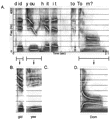
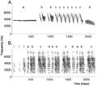
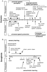
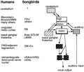

RSS
RSS▪ Abstract Human speech and birdsong have numerous parallels. Both humans and songbirds learn their complex vocalizations early in life, exhibiting a strong dependence on hearing the adults they will imitate, as well as themselves as they practice, and a waning of this dependence as they mature. Innate predispositions for perceiving and learning the correct sounds exist in both groups, although more evidence of innate descriptions of species-specific signals exists in songbirds, where numerous species of vocal learners have been compared. Humans also share with songbirds an early phase of learning that is primarily perceptual, which then serves to guide later vocal production. Both humans and songbirds have evolved a complex hierarchy of specialized forebrain areas in which motor and auditory centers interact closely, and which control the lower vocal motor areas also found in nonlearners. In both these vocal learners, however, how auditory feedback of self is processed in these brain areas is surprisingly unclear. Finally, humans and songbirds have similar critical periods for vocal learning, with a much greater ability to learn early in life. In both groups, the capacity for late vocal learning may be decreased by the act of learning itself, as well as by biological factors such as the hormones of puberty. Although some features of birdsong and speech are clearly not analogous, such as the capacity of language for meaning, abstraction, and flexible associations, there are striking similarities in how sensory experience is internalized and used to shape vocal outputs, and how learning is enhanced during a critical period of development. Similar neural mechanisms may therefore be involved.
Experts in the fields of human speech and birdsong have often commented on the parallels between the two in terms of communication and its development (Marler 1970a, Kuhl 1989). Does the acquisition of song in birds provide insights regarding learning of speech in humans? This review provides a critical assessment of the hypothesis, examining whether the similarities between the two fields go beyond superficial analogy. The often cited commonalities provide the topics of comparison that structure this review.
First, learning is critical to both birdsong and speech. Birds do not learn to sing normally, nor infants to speak, if they are not exposed to the communicative signals of adults of the species. This is an exception among species: Most animals do not have to be exposed to the communicative signals of their species to be able to reproduce them. The fact that babies and songbirds share this requirement has intrigued scientists.
Second, vocal learning requires both perception of sound and the capacity to produce sound. At birth, both human infants and songbirds have been hypothesized to have innate perceptual predispositions for the vocal behavior of their own species. We review the nature of the predispositions in the two cases and the issue of whether they are similar. Given that innate predispositions exist, another important question is how subsequent experience alters perception and production in each case. Moreover, vocal perception and production are tightly interwoven in the vocal learning process. We examine what is known about the relationship between perception and production and whether in these different vocal learners it is similar.
In addition, neural substrates of vocal communication in humans and birds have often been compared. Human brains are asymmetric and language tends to be organized in the left hemisphere as opposed to the right. Birds are also often assumed to show similar hemispheric specialization for song. What are the real parallels between the neural substrates in the two cases?
Finally, critical (sensitive) periods are evidenced in both species. Neither birds nor babies appear to learn their communicative signals equally well at all phases of the life cycle. This raises the questions of what causes the change in the ability to learn over time and with experience, and whether the causes are the same in human infants and songbirds. And if the plasticity of the brain is altered over the life cycle, what neural mechanisms control this changing ability to learn?
The research reviewed here relates to ongoing work in developmental biology, ethology, linguistics, cognitive psychology, and computer science, as well as in neuroscience, and it should be of interest to individuals in many of these fields. What our review reveals is that although the comparisons between birdsong and speech are not simple, there is a surprisingly large number of areas where it is fruitful to compare the two. Going beyond the superficial analogy, however, requires some caveats about what may be comparable and what clearly is not. In the end, understanding both the similarities and differences will provide a broader spectrum in which to view the acquisition of communication in humans and other animals.
Both birdsong and human speech are complex acoustic signals. Figure 1 shows a spectrographic (frequency vs time) display of a spoken human phrase (“Did you hit it to Tom?”) and Figure 2 a similar display of songs of two different songbird species. In both songbirds and humans, these sounds are produced by the flow of air during expiration through a vocal system. In humans, the process is relatively well understood: Air from expiration generates a complex waveform at the vocal folds, and the components of this waveform are subsequently modified by the rest of the vocal tract (including the mouth, tongue, teeth, and lips) (Stevens 1994). The vocal tract acts as a filter, creating concentrations of energy at particular frequencies, called formant frequencies (Figure 1). Vowels are characterized by relatively constant formant frequencies over time (Figure 1A and C), whereas during consonant production the formant frequencies change rapidly (20–100 ms), resulting in formant transitions (Figure 1A, B and D).
|  |
| Figure1 Human speech. Three dimensions of speech are shown in a spectrogram: time or duration along the horizontal axis; frequency along the vertical axis; and intensity, which is correlated with loudness, by the relative darkness of each frequency. This spectrogram shows the phrase “Did you hit it to Tom?” spoken by a female (A). (White lines) The formants that characterize each individual phoneme. (B–D) Variations on words from the full sentence. (B) A place of articulation contrast using a spectrogram of the nonsense word “gid,” which differs from its rhyme “did” (in A) in that it has a decreasing frequency sweep in the second and third formants (between 2000 and 3000 Hz). This decreasing formant pattern defines the sound “g” and a pattern of flat formants defines the sound “d.” (C) The spectrographic difference between the vowel sounds “oo” (A) and “ee.” (D) The words “Tom” and “Dom” contrast in voice onset time (VOT). Notice the long, noisy gap in “Tom” (A), which has a long VOT, compared with the short gap in “Dom.” |
|  |
| Figure2 Birdsongs. Examples of birdsongs from two species. (A) A typical song of a white-crowned sparrow. The smallest elements, the notes, are combined to form syllables (lower case letters), and these are repeated to form phrases. White-crowned sparrow songs typically begin with (a) a long whistle followed by (b, c) trills and (d) buzzes. (B) A typical song of a zebra finch. Note the noisy spectral quality (more like humans) that distinguishes it from more tonal species like the sparrows. Zebra finch songs start with a number of introductory syllables (marked with i), followed by a sequence of syllables (lower case letters), that can be either simple or more complex, with multiple notes (e.g. b, c). Particular sequences of syllables are organized into phrases called motifs (e.g. a–d), which are repeated. |
In songbirds, sounds are produced by the flow of air during expiration through an organ called the syrinx, a bilateral structure surrounded by specialized muscles, which sits at the junction of the bronchi with the trachea. A number of aspects of syringeal function are understood, although the exact mechanism of sound generation is controversial and is under active investigation (Gaunt 1987, Goller & Larsen 1997, Suthers 1997, Fee et al 1998). Also, there are indications that the upper vocal tract in birds structures sound in a manner like the upper vocal tract in humans. Recent research suggests that the width of beak opening (known as beak gape) affects sound frequency (Westneat et al 1993, Suthers 1997), and there may be some degree of coupling between the syrinx and the vocal tract (Nowicki 1987). Regardless of differences in component structures, for both birdsong and speech the production of highly structured and rapidly changing vocalizations requires elaborate neural control and coordination of respiration with a variety of vocal motor structures.
It is useful to define the basic terms used in each field, and the various ways in which vocal behavior is described, in order to assess what aspects of each of the signals are comparable. Human speech can be described at many different levels. It can be written, spoken, or signed (using a manual language such as American Sign Language). In all these forms, language consists of a string of words ordered by the rules of grammar to convey meaning. Stucturally, language can be analyzed from the standpoint of semantics (conceptual representation), syntax (word order), prosody (the pitch, rhythm, and tempo of an utterance), the lexicon (words), or phonology (the elementary building blocks, phonemes, that are combined to make up words).
Speech, and especially its development, has been intensively studied at the phonological level. Phonetic units are the smallest elements that can alter the meaning of a word in any language, for example the difference between /r/ and /l/ in the words “rid” and “lid” in American English. Phonemes refer to the phonetic units critical for meaning in a particular language. The phonetic difference between /r/ and /l/ is phonemic in English, for example, but not in Japanese. Each phonetic unit can be described as a bundle of phonetic features that indicate the manner in which the sound was produced and the place in the mouth where the articulators (tongue, lips, teeth) were placed to create the sound (Jakobson et al 1969). The acoustic cues that signal phonetic units have been well documented and include both spectral and temporal features of sound (Figure 1) (Stevens 1994). For instance, the distinction between /d/ and /g/ depends primarily on the frequency content of the initial burst in energy at the beginning of the sound and the direction of formant transition change (Figure 1A and B). An example of a temporal acoustic dimension of speech is voice-onset time (VOT), which refers to the timing of periodic laryngeal vibration (voicing) in relation to the beginning of the syllable (Figure 1A and D). This timing difference provides the critical cue used to identify whether a speech sound is voiced or voiceless (e.g. /b/ vs /p/, /d/ vs /t/) and is a classic distinction used in many speech studies.
Which aspects of birdsong can be usefully compared with speech? Birdsongs are distinct from bird calls (which are brief and generally not learned), last from a few seconds to many tens of seconds, and, like speech, consist of ordered strings of sounds separated by brief silent intervals (Figure 2). The smallest level of song usually identified is the note or “element,” defined as a continuous marking on a sound spectrogram; these may be analogous to the smallest units of speech, or phonetic units. Notes can be grouped together to form syllables, which are units of sound separated by silent intervals. When singing birds are interrupted by an abrupt light flash or sound, they complete the syllable before stopping (Cynx 1990); thus, syllables may represent a basic processing unit in birdsong, as posited for speech.
Another feature that birdsong and language share is the conspicuous timing and ordering of components on a timescale longer than that of the syllable. Song syllables are usually grouped together to form phrases or “motifs” (Figure 2), which can be a series of identical or different syllables. Many songbirds sing several phrases in a fixed order as a unit, which constitutes the song, whereas other species such as mockingbirds and warblers produce groups of syllables in fixed or variable sequences. The timing and sequencing of syllables and phrases are rarely random but instead follow a set of rules particular to a species. In the songbird literature, the ordering of syllables and phrases in song is often called song syntax. The same word applied to human speech, however, implies grammar, i.e. rules for ordering words from various grammatical classes to convey meaning. Therefore, in this review, we avoid using the word syntax for song and simply use “order.” Thus, language and song share a dependence on timing on several timescales: a shorter timescale (on the order of tens of milliseconds), as in phonemes and syllables, and a longer one, up to many hundreds of milliseconds (as in syllable, phrase, and word ordering).
Language is also characterized by a boundless and flexible capacity to convey meaning, but this property is not shared with birdsong. The whole set of different songs of a bird is known as its song repertoire and can vary from one (in species such as the zebra finch or white-crowned sparrow) to several hundreds (for review see Konishi 1985). Numerous behavioral studies, usually using the receiver's response, suggest that songs communicate species and individual identity (including “neighbor” and “stranger”), an advertisement for mating, ownership of territory, and fitness. Some birds with multiple song types use different songs for territorial advertisement and for mate attraction (Catchpole 1983, Searcy & Nowicki 1998). Nonethless, large song repertoires do not seem to convey many different meanings, nor does song have the complex semantics of human speech. The definitions above suggest that the phonology (sound structure), the rules for ordering sounds, and perhaps the prosody (in the sense that it involves control of frequency, timing, and amplitude) are the levels at which birdsong can be most usefully compared with language, and more specifically with spoken speech, and are thus the focus of this review.
Many animals produce complex communication sounds, but few of them can and must learn these vocal signals. Humans are consummate vocal learners. Although there is emerging evidence that social factors can influence acoustic variability among nonhuman primates (Sugiura 1998), no other primates have yet been shown to learn their vocalizations. Among the mammals, cetaceans are well known to acquire their vocal repertoire and to show vocal mimicry (McCowan & Reiss 1997); there are also some bats whose vocalizations may be learned (Boughman 1998). Among avian species, songbirds, the parrot family, and some hummingbirds meet the criteria for vocal learning, but the term birdsong is usually reserved for the vocalizations of passerine (perching) songbirds and that is the focus of this review. The many thousands of songbird species, as well as the parrots and hummingbirds, stand in striking contrast to the paucity of mammalian vocal learners.
Nonhuman primates can, however, make meaningful use of vocalizations: For instance, vervets use different calls to indicate different categories of predators. Production of these calls is relatively normal even in young vervets and does not appear to go through a period of gradual vocal development, but these animals must develop the correct associations of calls to predators during early ontogeny (Seyfarth & Cheney 1997). What songbirds and humans share is not this development of associations of vocalizations with objects or actions, but the basic experience-dependent memorization of sensory inputs and the shaping of vocal outputs.
The basic phenomenology of learning of song or speech is strikingly similar in songbirds and humans. Initial vocalizations are immature and unlike those of adults: babies babble, producing consonant-vowel syllables that are strung together (e.g. bababa or mamama), and young songbirds produce subsong, soft and rambling strings of sound. Early sounds are then gradually molded to resemble adult vocalizations. The result of this vocal development is that adults produce a stereotyped repertoire of acoustic elements: These are relatively fixed for a given individual, but they vary between individuals and groups (as in languages and dialects, and the individually distinct songs and dialects of songbirds within a particular species). This variability is a reflection of the fact that vocal production by individuals is limited to a subset of all sounds that can be produced by that species. Layered on top of the developing capacity to produce particular acoustic elements is the development of sequencing of these elements: For humans this means ordering sounds to create words and, at a higher level, sentences and grammar; in birds this means sequencing of elements and phrases of song in the appropriate order. An important difference to remember when making comparisons is that the numerous languages of humans are not equivalent to the songs of different species, but rather to the individual and geographical variations of songs within a species.
That the development of a mature vocal repertoire reflects learning rather than simply the expression of innate programs is apparent from a number of observations. Most important, for both birds and humans, there exist group differences in vocal production that clearly depend on experience. Obviously, people learn the language to which they are exposed. Moreover, even within a specific language, dialects can identify the specific region of the country in which a person was raised. Likewise, songbirds learn the songs sung by adults to which they are exposed during development: This can be clearly demonstrated by showing that birds taken from the wild as eggs or nestlings and exposed to unrelated conspecific adults, or even simply to tape recordings of the song of these adults, ultimately produce normal songs that match those that were heard (Marler 1970b;, Thorpe 1958, 1961). Even more compelling are cross-fostering experiments, in which birds of one species being raised by another will learn the song, or aspects thereof, of the fostering species (Immelmann 1969). In addition, many songbirds have song “dialects,” particular constellations of acoustic features that are well defined and restricted to local geographic areas. Just as with human dialects, these song dialects are culturally transmitted (Marler & Tamura 1962).
Another line of evidence supporting vocal learning is the development of abnormal vocalizations when humans or birds with normal hearing are socially isolated and therefore not exposed to the vocalizations of others. The need for auditory experience of others in humans is evident in the (fortunately rare) studies of children raised either in abnormal social settings, as in the case of the California girl, Genie, who was raised with almost no social contact (Fromkin et al 1974), or in cases in which abandoned children were raised quite literally in the wild (Lane 1976). These and other documented instances in which infants with normal hearing were not exposed to human speech provide dramatic evidence that in the absence of hearing speech from others, speech does not develop normally. Similarly, songbirds collected as nestlings and raised in isolation from adult song produce very abnormal songs (called “isolate” songs) (Marler 1970b, Thorpe 1958). This need for early auditory tutoring has been demonstrated in a wide variety of songbirds (for reviews see Catchpole & Slater 1995, Kroodsma & Miller 1996). Strikingly, although isolate songs are simplified compared with normal, learned song, they still show some features of species-specific song (Marler & Sherman 1985).
One caveat about studies of isolated songbirds or humans is that many aspects of development are altered or delayed in such abnormal rearing conditions. Nonetheless, the results of isolation in humans and songbirds are in striking contrast to those seen with members of closely related species, such as nonhuman primates and nonsongbirds such as chickens, in whom vocalizations develop relatively normally even when animals are raised in complete acoustic isolation (Konishi 1963, Kroodsma 1985, Seyfarth & Cheney 1997). In combination with the potent effects of particular acoustic inputs on the type of vocal output produced, these results demonstrate how critically both birdsong and speech learning depend on the auditory experience provided by hearing others vocalize.
Vocal learning, shared with few other animals, is also evident in the fact that both humans and songbirds are acutely dependent on the ability to hear themselves in order to develop normal vocalizations. Human infants born congenitally deaf do not acquire spoken language, although they will, of course, learn a natural sign language if exposed to it (Petitto 1993). Deaf infants show abnormalities very early in babbling, which is an important milestone of early language acquisition. At about 7 months of age, typically developing infants across all cultures will produce this form of speech. The babbling of deaf infants, however, is maturationally delayed and lacks the temporal structure and the full range of consonant sounds of normal-hearing infants (Oller & Eilers 1988, Stoel-Gammon & Otomo 1986). The strong dependence of speech on hearing early in life contrasts with that of humans who become deaf as adults: Their speech shows gradual deterioration but is well preserved relative to that of deaf children (Cowie & Douglas-Cowie 1992, Waldstein 1989).
Songbirds are also critically dependent on hearing early in life for successful vocal learning. Although birds other than songbirds, e.g. chickens, produce normal vocalizations even when deafened as juveniles, songbirds must be able to hear themselves in order to develop normal song (Konishi 1963, 1965;, Nottebohm 1968). Songbirds still sing when deafened young, but they produce very abnormal, indistinct series of sounds that are much less songlike than are isolate songs; often only a few features of normal songs are maintained (primarily their approximate duration) although this varies from species to species (Marler & Sherman 1983). As with humans, once adult vocalizations have stabilized, most songbird species show decreased dependence on hearing (Konishi 1965; but see below).
The effects of deafness in early life do not differentiate between the need for hearing others and a requirement for hearing oneself while learning to vocalize. In birds, however, there is often a separation between the period of hearing adult song and the onset of vocalizations, and this provided the opportunity to demonstrate that song is abnormal in birds even when they have had adequate tutor experience prior to being deafened (Konishi 1965). This revealed that during song learning hearing functions in two ways, in two largely nonoverlapping phases (Figure 3B). During an initial sensory phase, the bird listens to and learns the tutor song. After this sensory learning, however, the memorized song, called the template, cannot be simply internally translated into the correct vocal motor pattern. Instead, a second, sensorimotor learning or vocal practice phase is necessary. The bird must actively compare and gradually match its own vocalizations to the memorized template, using auditory feedback. The need for the bird to hear itself is also evident in birds first raised in isolation and then deafened prior to sensorimotor learning. These birds sing abnormal songs indistinguishable from those of deafened tutored birds, demonstrating that the innate information about song that exists in isolate birds also requires auditory feedback from the bird's own vocalizations and motor learning in order to be turned into motor output (Konishi 1965). Thus, learning to produce song is crucially dependent on auditory experience of self as well as of others.
|  |
| Figure3 Timelines of speech and song learning. (A) During the first year of life, infant perception and production of speech sounds go through marked changes. (A, top) The developmental milestones associated with listening to speech; (A, bottom) the type of sounds produced throughout an infant's first year, leading up to the meaningful production of words. In both aspects of development, infants change from being language-general in the earliest months to language-specific toward the end of the first year. (B) Similar timelines show the early perceptual learning of seasonal songbirds (approximately 2–3 months), followed by sensorimotor learning in the fall and especially the next spring. In zebra finches this entire learning takes place over 3–4 months, with the critical period ending around 60 days of age, and much more overlap between sensory and sensorimotor phases (with singing beginning around 30 days of age). |
It is likely that humans also have to hear themselves in order to develop normal speech. This issue is more difficult to study in human infants than in songbirds, however, because the need for auditory input from others overlaps substantially in time with when childen are learning to speak (Figure 3A). Studies of children becoming deaf later in childhood, however, indicate that speech still deteriorates markedly if deafness occurs prior to puberty (Plant & Hammarberg 1983). Thus, even though language production is well developed by late preadolescence, it cannot be well maintained without the ability to hear, which suggests that feedback from the sound of the speaker's own voice is also crucial to the development and stabilization of speech production. In addition, special cases in which infants hear normally but cannot vocalize provide relevant data. Studies of speech development in children who prior to language development had tracheostomies for periods lasting from 6 months to several years indicate severe speech and language delays as a result (Locke & Pearson 1990, Kamen & Watson 1991). Although these studies cannot rule out motor deficits due to lack of practice or motor damage, the speech of these children, who have normal hearing, is similar in its structure to that produced by deaf children. These studies, and the effects of deafness on older children, provide evidence that just as in songbirds, both the sounds produced by the individuals themselves and those produced by others are essential for normal speech development.
In both humans and songbirds, the strong dependence of vocal behavior on hearing early in life lessens in adulthood. Postlingually deaf adults do show speech deterioration (Cowie & Douglas-Cowie 1992, Waldstein 1989), but it is less than that of deaf children, and it can be rapidly ameliorated even by the limited hearing provided by cochlear implants (Tyler 1993). In some songbird species, song deteriorates very little in deafened adults, which suggests song is maintained by nonauditory feedback and/or by a central pattern generator that emerged during learning. In other species, song deteriorates more markedly after deafness in adulthood, both in phonology and in syllable ordering (Nordeen & Nordeen 1993, Woolley & Rubel 1997, Okanoya & Yamaguchi 1997). Even in these cases, in many species song deterioration is often slower in adults than in birds actively learning song and may depend on how long the bird has been singing mature, adult (“crystallized”) song. Some birds are “open” learners: That is, their capacity to learn to produce new song remains open in adulthood (e.g. canaries) (Nottebohm et al 1986). Consistent with how critical hearing is to the learning of song, these species remain acutely dependent on auditory feedback for normal song production as adults.
Moreover, for both human speech and birdsong, incorrect or delayed auditory feedback in adults is more disruptive than the complete absence of auditory feedback. For instance, delayed auditory playback of a person's voice causes slowing, pauses, and syllable repetitions in that subject (Howell & Archer 1984, Lee 1950). In addition, when adult humans are presented with altered versions of the vowels in their own speech, after a very short time delay, these subjects unconsciously produce appropriately altered speech (Houde & Jordan 1998). In songbirds as well, recent results suggest that delayed or altered auditory feedback can cause syllable repetitions or song deterioration (Leonardo & Konishi 1998; J Cynx, personal communication). Thus, although auditory feedback is not as essential for ongoing vocal production in adult birds and humans as in their young, it clearly has access to the adult vocal system and can have dramatic effects on vocal behavior if it is not well matched with vocal output.
Key features of vocal learning are the perception of sounds, the production of sounds, and the (crucial) ability to relate the two. In the next section, two questions, which roughly parallel the course of vocal development and have preoccupied both speech and song scientists, are addressed. What are the perceptual capabilities and innate predispositions of vocal learners at the start of learning? And what does subsequent experience do to perception?
Experience clearly affects vocal production in humans and songbirds, but there is compelling evidence that learning in both species does not occur on a tabula rasa. Rather, there is evidence of constraints and predispositions that bias the organism in ways that assist vocal learning.
At the most fundamental level, the physical apparatus for vocalization constrains the range of vocalizations that can be produced (Podos 1996). What is surprising, however, is that motor constraints do not provide the strongest limitations on learning. Both bird and human vocal organs are versatile, and although some sounds are not possible to produce, the repertoire of human and songbird sounds is large.
Looking beyond these peripheral motor constraints, there are centrally controlled perceptual abilities that propel babies and birds toward their eventual goal, the production of species-typical sound. In humans, perceptual studies have been extensively used to examine the initial capacities and biases of infants regarding speech, and they have provided a wealth of data on the innate preparation of infants for language. At the phonetic level, classic experiments show that early in postnatal life, infants respond to the differences between phonetic units used in all of the world's languages, even those of languages they have never heard (Eimas 1975a, b;, Streeter 1976; for review see Kuhl 1987). In these studies, infants are tested using procedures that indicate their ability to discriminate one sound from another. These include the high-amplitude sucking paradigm (in which changes in sucking rate indicate novelty), as well as tests in which a conditioned head turn is used to signal infant discrimination. These tests demonstrate the exquisite sensitivity of infants to the acoustic cues that signal a change in the phonetic units of speech, such as the VOT differences that distinguish /b/ from /p/ or the formant differences that separate /b/ from /g/ or /r/ from /l/.
Moreover, as with adults, infants show categorical perception of sounds, a phenomenon initially demonstrated in adults during the 1950s (Liberman et al 1967). Tests of categorical perception use a computer-generated series of sounds that continuously vary in small steps, ranging from one syllable (e.g. /ba/) to another (/pa/), along a particular acoustic dimension (in the case of /ba/ and /pa/, the VOT). Adult listeners tend not to respond to the acoustic differences between adjacent stimuli in the series but perceive an abrupt change in the category—the change from /ba/ to /pa—at a particular VOT (hence the name categorical perception). In adults, categorical perception generally occurs only for sounds in the adult's native language (Miyawaki et al 1975). Very young infants not only perceive sounds categorically (Eimas et al 1971, Eimas 1975a) but also demonstrate the phenomenon for sounds from languages they have never heard as well as for sounds from their native language (Streeter 1976, Lasky et al 1975). These studies provided the first evidence that infants at birth have the capacity to discriminate any and all of the phonetic contrasts used in the languages of the world, a feature of auditory perception that greatly enhances their readiness for language learning.
Later studies revealed that nonhuman mammals (chinchillas and monkeys) respond to the same discontinuities in speech that human infants do (Kuhl & Miller 1975;, Kuhl & Padden 1983), which suggested that human speech evolved to take advantage of the existing auditory capacities of nonhuman primates (Kuhl 1986). Data also showed that human infant sensitivities extended to nonspeech sounds that contained acoustic dimensions critical to speech but that were not identifiable as speech (Jusczyk et al 1977). These data caused a shift in what was theorized to be innate (Kuhl 1986, 1994;, Jusczyk 1981). Initial theories had argued that humans were endowed at birth with “phonetic feature detectors” that defined all possible phonetic units across languages (Eimas 1975b). These detectors were thought to specify the universal set of phonetic units. When data revealed that the categorical perception of speech was not restricted to humans nor to speech, theories were revised to suggest that what was innate in humans was an initial discriminative capacity for speech sounds, rather than a specification of speech sounds themselves. Infants' initial discriminative capacities are currently viewed as “basic cuts” in auditory perception. Though not precise, they allow infants to discriminate the sounds of all languages (Kuhl 1994). Evidence supporting this comes from studies showing that, with exposure to language, the accuracy of discrimination increases substantially for native-language sounds (Kuhl et al 1997b, Burnham et al 1987). Theorists noted that these innate perceptual abilities, although not unique to humans, provided infants with a capacity to respond to and acquire the phonology of any language.
As with humans, young songbirds begin life endowed with the capacity for responding to the sounds of their own species, before they have done any singing themselves. Studies of changes in heart rate in young birds in response to song playback initially demonstrated that both male and female sparrows innately discriminate conspecific from heterospecific song (Dooling & Searcy 1980). Measurement of white-crowned sparrow nestling begging calls in response to tape-recorded song also revealed the much greater vocal behavior of young birds in response to their own species' song than to alien song, providing further evidence of inborn sensory recognition of conspecific song (Nelson & Marler 1993). This assay also used simplified versions of these songs containing single phrases or modified songs with altered order, to begin to define the minimal acoustical cues critical for this innate recognition (Whaling et al 1997).
There is a subtle but important difference between most studies of innate predispositions in songbirds and in humans, however. In birds, what has been examined is not discrimination of sounds within a set of possible songs from a particular species, which would be analogous to studies of phonemes from different human languages. Rather, most studies have looked at learning and listening preferences between songs of different songbird species. This is not possible in humans because one cannot isolate humans in order to expose them to the sounds of other species (to macaque monkey calls, for example) to determine whether they would learn such calls. In birds with whom these experiments have been done, both innate conspecific song recognition and preference are evident in the choice of models for learning song. A variety of experiments, using tape playback of tutor songs, showed that songbirds prefer their own species' song over alien songs as tutor models (Marler & Peters 1977, Marler & Peters 1982). Songbirds are capable of imitating alien songs, or at least of producing modified versions of them, especially in situations in which these are the only songs they hear. When given a choice of conspecific and heterospecific song, however, they preferentially copy the song of their own species. They also usually make much more complete and accurate copies of the conspecific model than of the alien song and may take longer to learn heterospecific song (Marler & Peters 1977, Konishi 1985, Marler 1997). The ability to compare different species has provided evidence that there exists some rudimentary model of species-typical song even in the absence of experience. In humans, there is no convincing experimental evidence that infants have an innate description of speech. Only a few preference tests analogous to those in birds have examined the issue (e.g. Hutt et al 1968), and the results are not conclusive. Moreover, because infants hear their mothers' voices both through the abdominal wall and through bone conduction and have been shown to learn aspects of speech (prosodic cues) while still in the womb (e.g. DeCasper & Spence 1986, Moon et al 1993) (see below), it will be difficult to determine whether infants are endowed with an innate description of speech prior to experience.
In birds, where there is an experimentally verified innate song preference, one can then ask what aspect of the song is required for recognition. Marler & Peters (1989) created synthetic tutor songs with syllables from two different species (the closely related swamp sparrows and song sparrows), arranged in temporal patterns characteristic of one or the other species. Using these songs to tutor the two types of sparrows, they demonstrated that predispositions vary across species. For instance, swamp sparrows copied syllables from their own species song, regardless of the temporal arrangement of syllables in the synthetic tutor song. In contrast, song sparrows could copy swamp sparrow notes, but only when these were ordered in the usual multi-part pattern of song sparrow song. Thus, for the swamp sparrow a critical cue (presumably innately specified) appears to be syllable structure, whereas for song sparrows it is syllable ordering as well as syllable structure. Certain acoustic cues may also serve as attentional flags that permit the acquisition of heterospecific notes: For instance, when the calls of ground squirrels were incorporated into tutor songs that began with the long whistle universally found in white-crowned sparrow song, these sparrows could be shown to learn these squirrel sounds, which they would normally never acquire (Soha 1995).
In addition to the fact that most studies in birds compare species, another difference between the studies of innate predispositions for song and those for language learning is that in many cases the assay in birds is the song that the bird eventually produces. Any deduction of initial perceptual capacities from the final vocal output confounds initial capacities with subsequent sensory learning and motor production. Nonetheless, the studies of sensory capacities in birds with heart rate or begging call measures provide direct support for the idea that birds innately recognize their own species song. This recognition is presumed to underlie much of the innate predisposition to learn conspecific song evident in the tutoring experiments. Thus, both humans and birds start out perceptually prepared for specific vocal learning. It may be that songbirds also have more complex innate specifications than do humans, or simply that the analogous experiments (pitting speech against nonspeech sounds) have not or cannot be done with humans.
Another way of examining innate neural biases is to look at vocal production that emerges prior to, or in the absence of, external acoustic influences. For obvious reasons, relatively few data are available from humans. Deaf babies do babble, but their productions rapidly become unlike those of hearing infants. At a higher level of language analysis, there is some evidence that children exposed only to simple “pidgin” languages, and deaf children exposed to no acoustic or sign language, develop some elements (words or gestures, respectively) and order them in a way that is consistent with a rudimentary grammar (Pettito 1993, Bickerton 1990, Goldin-Meadow & Mylander 1998). It remains disputed, however, whether this reflects an innate model specific to language (Chomsky 1981, Fodor 1983) or a more general innate human capacity to learn to segment and group complex sensory inputs (Elman et al 1996, Bates 1992).
Songbirds again provide an opportunity to study this issue because analysis of the songs of birds reared in a variety of conditions can provide extensive data relevant to the issue of what may be innate in a vocal learner. In normally reared songbirds, the song of every individual bird within a species differs, but there are enough shared characteristics within a species that songs can also be used for species identification. The songs of birds raised in complete isolation vary between individuals but always contain some of the species-specific structure, although these songs are much less complex than those of tutored birds: White-crowned sparrow isolate songs tend to contain one or more sustained whistles, swamp sparrow isolates sing a trilled series of downsweeping frequencies, and song sparrow isolates produce a series of notes ordered in several separate sections. Even when white-crowned sparrows have copied alien song phrases, they often add an “innate” whistle ahead of these (Konishi 1985, Marler 1997, Marler 1998). Thus, there is innate information that provides rough constraints on the song even in the absence of tutoring experience. Strikingly, almost all these features require auditory feedback to be produced. Because these features must be translated into vocal output via sensorimotor learning, they cannot be completely prespecified motor programs; they must involve some sensory recognition and feedback. Thus, the innate mechanisms that direct isolate song might bear some relationship to the neural mechanisms that allow innate sensory recognition of song. Recent behavioral evidence, however, suggests that there is not complete overlap between isolate song and the features found to be critical for innate conspecific recognition (Whaling et al 1997).
Innate sensory recognition and learning preferences in both humans and songbirds suggest that there must be underlying genetic mechanisms, perhaps specifying auditory circuitry specialized for processing complex sounds in special ways. An advantage of songbirds is that, unlike humans, there are many different, but closely related, species and even subspecies of vocal learners that show variation in their capacity to learn (Kroodsma & Canady 1985, Nelson et al 1996). An intriguing example is the recent result of Mundinger (1995), who showed that the roller and border strains of canaries, which differ in note types, simply do not learn or retain in their songs the note types most specific of the other strain. However, hybrid offspring of the two breeds readily learn both types, and analysis of the patterns of inheritance of this capacity in these birds and in back-crosses has even begun to point to chromosome linkage (Mundinger 1998). Comparisons of perceptual and motor learning and their neural substrates in birds like these may facilitate eventual understanding of the neural mechanisms contributing to innate biases for vocal learning.
Although neither the human nor the songbird brain starts out perceptually naive, abundant evidence in both fields suggests that innate predispositions are subsequently modified by experience. In addition, both speech and song scientists are grappling with the question of how experience alters the brain. In purely selective models of learning, sensory experience simply selects the sounds to be used to guide vocal learning from an extensive set of preencoded possibilities. In purely instructive models, there is no innate information about what is to be learned, and experience simply instructs a wide open brain about what to memorize. In fact, studies of both song and speech are converging on the idea that the mechanisms underlying learning are not described by either of these extreme models but combine aspects of each.
As described, at the phonetic level of language infants initially discriminate phonetic units from all languages tested, showing that they perceive and attend to the relevant acoustic features that distinguish speech sounds. By 6 months of age, however, infants have been affected by linguistic experience and show recognition of the specific phonetic units used in their native language. At this age, they respond differently to phonetic prototypes (best instances of phonetic categories) from the native as opposed to a foreign language (Kuhl 1991, Kuhl et al 1992). By 9 months, they have learned the stress patterns of native-language words, and the rules for combining phonetic units (Jusczyk et al 1993), phrasal units (Jusczyk et al 1992), and the statistical probabilities of potential word candidates (Saffran et al 1996). Finally, by 12 months of age, native-language learning is evident in the dramatic changes seen in perceptual speech abilities (Werker & Tees 1992) (Figure 3A). Infants no longer respond to speech contrasts that are not used in their native language, even the ones that they did discriminate at earlier ages (Werker & Tees 1984, Kuhl et al 1997b). Instead, 1-year-old infants show the pattern typical of adult native-language listeners wherein discrimination of foreign-language contrasts has been shown to be difficult: Adult English speakers fail to discriminate Hindi consonant-vowel combinations (Werker & Tees 1984, 1992), American speakers fail on Spanish /b/ and /p/ (Abramson & Lisker 1970), and speakers of Japanese fail to discriminate American English /r/ and /l/ (Miyawaki et al 1975). The decline in the language-universal perception of infants has been directly demonstrated for Canadian infants tested sequentially over time with Hindi contrasts (Werker & Tees 1984) and, most recently, for Japanese infants listening to American English /r/ and /l/ (Kuhl et al 1997b).
In humans, there is evidence that perceptual learning of the more global, prosodic aspects of language actually commences prior to birth. Studies using the sucking and heart rate paradigms show that exposure to sound in utero has resulted in a preference of newborn infants for native-language over foreign-language utterances (Moon et al 1993), for the mother's voice over another female's voice (DeCasper & Fifer 1980), and for simple stories the mother read during the last trimester over unfamilar stories (DeCasper & Spence 1986). This indicates that the prosodic aspects of human speech, including voice pitch and the stress and intonation characteristics of a particular language and speaker, are transmitted to the fetus and are learnable.
All these studies on learning in the first year of life indicate that prior to the time that infants learn the meanings of individual words or phrases, they learn to recognize general perceptual characteristics that describe phonemes, words, and phrases that typify their native language. Thus, as a first step toward vocal learning, infants avidly acquire information about the perceptual regularities that describe their native language and commit them to memory in some form. Understanding the nature of this early phonetic learning and the mechanisms underlying it is one of the key issues in human language development.
A variety of experiments provide evidence that what occurs in the first, or sensory, phase of song learning is the memorization of the sensory template, which is a subset of all possible vocalizations of the species (Marler 1970b). This phase is thus in many ways analogous to the early perceptual learning of human infants. The study of perceptual learning in songbirds that is most similar to studies of humans measures vocal behavior of 10- to 40-day-old white-crowned sparrows in response to playback of tutored and novel songs (Nelson et al 1997): After 10-day periods of tape tutoring with pairs of songs, male white-crowned sparrows not only gave significantly more calls to these tutor songs than to unfamiliar songs, they also called significantly more to the specific song of the tutor song pair that they would subsequently produce than to the nonimitated song of that pair. This suggests that the vocal assay reflected sensory learning that would ultimately be used for vocal production.
Most studies of the sensory learning period in songbirds, however, have assessed what is learned by using adult song production as an assay, after tutoring birds either for short blocks of time beginning at different ages or with changing sets of songs for a long period of time (Marler 1970b, Nelson 1997). Measuring learning using song production may underestimate what is perceptually learned. In many of these tutoring experiments, however, the song ultimately produced reflected experiences that had occurred long before the birds had begun to produce vocalizations; these studies, therefore, provide strong evidence that the first phase of learning involves the memorization of song.
In contrast to the emerging data on in-utero learning in humans, prehatch or even immediately posthatch experience has not yet been shown to have much influence on song learning. Rather, in the well-studied white-crowned sparrows, the sensory period begins around day 20 and peaks in the next 30 days, with some acquisition possible up to 100 or 150 days (Baptista & Petrinovich 1986, Marler 1970b) (Figure 3). The timing of sensory learning may be similar for many other seasonal species (Kroodsma & Miller 1996, Catchpole & Slater 1995). Studies of zebra finches in which birds were separated from their tutors at different ages suggest that different aspects of the tutor song are memorized in sequence, with the individual component sounds being learned first and the overall order and temporal pattern acquired later (Immelmann 1969). Careful comparisons of related white-crowned sparrow subspecies under identical learning conditions show that genetics also plays a role in the exact timing of learning: Subspecies of sparrows from harsh climates with short breeding seasons learn earlier and more than their coastal cousins (Nelson et al 1995). Such differences between birds provide an opportunity to identify the factors governing sensory learning.
The initial studies demonstrating categorical perception of speech sounds in infants and its narrowing with language exposure led many speech theorists to take a strongly nativist or selective view of speech learning. By this hypothesis, infants were thought to be biologically endowed either with phonetic feature detectors that specified all the phonetic units used across languages (e.g. Eimas 1975b) or with knowledge of all linguistically significant speech gestures (Liberman & Mattingly 1985). The subsequent decline in speech discrimination was seen as a process of atrophy of the prespecified phonetic representations in the absence of experience. Recent studies of languages and of experience-dependent perceptual maps are changing theories of language learning and the role of innate and learned factors in the acquisition process. Rather than only selecting from prespecified categories, experience is thought to establish memory representations for speech that specify the phonetic units used in that language and that alter the perceptual system of the infant (Kuhl 1994). On this view, experience is instructive as well as selective.
Several lines of evidence support this changing view. For one, cross-linguistic studies show that across languages, even ostensibly similar vowels (such as the vowel /i/) show a great deal of variation (Ladefoged 1994). This suggests that prestoring all possible phonetic units of the world's languages would not be an efficient process. A second line of evidence against a simple atrophy of phonetic representations from lack of exposure is that, often, listeners are exposed to the categorical variations that they eventually fail to perceive. For instance, approximations of both English /r/ and /l/ are produced interchangeably by Japanese adults, although they do not change the meanings of words (Yamada & Tohkura 1992). Japanese infants are therefore exposed (albeit randomly) to variants of both /r/ and /l/; similarly, American infants are exposed to variants of Spanish /b/ and /p/. Yet, both groups will eventually fail to respond to those distinctions. Finally, more detailed studies on the changes in infant phonetic perceptions brought about by experience suggest that perceptual learning is not in fact a simple sensory memory of the sound patterns of language. Instead, it seems to be a complex mapping in which perception of the underlying acoustic dimensions of speech is warped to create a recognition network that emphasizes the appropriate phonetic differences and minimizes those that are not used in the language (Kuhl 1994, Kuhl et al 1998, Kuhl & Meltzoff 1997). This warping of the underlying dimensions is language specific such that no adult speakers of any language perceive speech sounds veridically. Rather, in each language group, perception is distorted to enhance perception of that language: This has been called the perceptual magnet effect (PME).
This last line of evidence results from studying perception of sounds in more detail than simply identifying category boundaries. Kuhl et al (1998) used large grids of systematically varying consonant-vowel syllables spanning the phonetic boundary between American English /r/ and /l/ to test American and Japanese adults. They asked listeners to rate the perceptual similarity of all possible pairs of stimuli and used multidimensional scaling techniques to create a map of the perceived physical distances between stimuli. The maps for American and Japanese speakers indicated that although the real physical distances between each stimulus in the grid were equal, American and Japanese adults perceived the sounds, and the distances between them, very differently. Americans identified the sounds as belonging to two clearly different categories, /r/ and /l/, whereas Japanese identified all stimuli but one as Japanese /r/ (the only phoneme of this type normally used in Japanese). Moreover, American listeners perceived many sounds as if they were closer to the best, most prototypical examples of /r/ and /l/ (called prototypes) than they really were. This is the origin of the term perceptual magnet effect, meant to describe how prototypes seem to act as magnets for surrounding sounds. Americans also perceived a larger than actual separation between the two categories. Japanese listeners showed no magnet effects, and no separation between the two categories. Thus, neither of the two groups perceive the real physical differences between the sounds. Instead, language experience has warped the underlying physical space so that if certain categories of sounds are used in a language, differences within a category are perceptually shrunk, whereas differences between categories are perceptually stretched. The PME may aid in perception by reducing the effects of the variability that exists in physical speech stimuli.
Critically for theories of speech learning, further studies suggest that these mental maps for speech are being formed or altered early in life as a function of linguistic experience. At 6 months of age, infants being raised in different cultures listening to different languages show the PME only for the sounds of their own native language (Kuhl et al 1992). Moreover, when American and Japanese infants were tested at 6–8 months of age, both groups showed the ability to discriminate American English /r/ and /l/, as expected from previous studies. By 10–12 months, however, not only did Japanese infants show a dramatic decline in performance, but American infants had also increased their accuracy of discrimination. This suggests that experience is not simply preventing atrophy (Kuhl et al 1997b). Finally, monkeys do not show the PME, indicating that, unlike categorical perception, it is not an effect that is inherent in the auditory processing of speech stimuli in many animals (Kuhl 1991). The implication is that magnet effects explain the eventual failure of infants to discriminate foreign-language contrasts. Japanese infants, for example, would form a phonetic prototype for Japanese /r/ that is located between American /r/ and /l/. The magnet effect formed by experience with Japanese would eventually cause a failure to discriminate the American sounds. Although the studies show that magnet effects are altered by experience, it is not yet known whether magnet effects initially exist for all sounds of all languages and are then modified by experience, or whether they do not exist initially and are formed as a function of experience (Kuhl 1994).
The special kind of speech that adults use when they speak to infants (“parentese”) it may play a role in the normal infant development of these phonemic maps. It has long been known that adults speak to infants using a unique tone of voice, and that when given a choice, infants prefer this kind of speech (Fernald 1985, Fernald & Kuhl 1987, Grieser & Kuhl 1988). Early work on parentese emphasized the prosodic differences (the increased fundamental frequency or pitch of the voice, its animated intonation contours, and its slower rate). Recent data show, however, that infant-directed speech also provides infants with greatly exaggerated instances (hyperarticulated prototypes) of the phonetic units of language (Kuhl et al 1997a). When speaking to infants, humans may intuitively produce a signal that emphasizes the relevant distinctions and increases the contrast between phonetic instances.
The studies described above all lend support to the newly emerging view that the initial abilities of infants to discriminate the auditory dimensions employed in speech contrasts are dramatically altered simply by listening to ambient language, resulting in a new and more complex map of the relevant linguistic space. The perception of speech in infants is thus both highly structured at birth, promoting attention to the relevant acoustic distinctions signaling phonetic differences, and highly malleable, allowing the brain to lay down new information, instructed by experience.
Studies of perceptual learning in humans suggest that initial basic divisions of sound space are gradually altered by experience with the native language. The same questions about how this occurs that have been raised in humans can be asked about the effects of sensory experience in birds. The two extreme models (instructive and selective) discussed in the case of human speech have also been raised in the case of birdsong (Marler 1997).
A purely instructive model would suggest that birds have little foreknowledge about the song of their species and are equally ready and able to learn virtually any song to which they are exposed. This is not consistent with innate preferences for learning conspecific song (Marler 1997, Marler & Peters 1982). It also cannot explain isolate songs. These songs vary a great deal between individuals, however, which suggests that the innate template only coarsely defines the species song. The instructive model does account for the fact that prior to the production of the final learned songs, many birds produce copies of syllable types that are not used later in their final songs (Marler & Peters 1982). Even the syllables of alien species to which a bird was exposed can be reproduced in this way (Thorpe 1961, Konishi 1985). This phenomenon of overproduction of syllables suggests that birds are instructed by experience to memorize and even produce multiple songs, including songs of other species. The instructive model has difficulty, however, explaining the usual attrition later in song learning of syllables not appropriate for the species. A more realistic view of the instructive model would posit that during the impressionable phase, birds memorize a variety of songs, perhaps memorizing more easily or more completely songs that match their prespecified preferences. Later, during sensorimotor learning, birds listen to their vocalizations and use the memorized songs as templates to assess how well their vocal output matches them. They then ultimately elect to produce as adults a subset of those songs; the selection of this subset may be guided by a combination of genetic biases and experience (Nelson & Marler 1994). Thus, even the simplest instructive model contains some elements of selection, both at the early (sensory) and at the late (sensorimotor) learning stages.
Alternatively, a strictly selective model of song learning can be proposed, in which the songbird brain has extensive innate knowledge about its species song, and this knowledge is then simply activated by experience. Evidence in favor of this includes innate song learning preferences and the surprising lack of variability seen in nature when the song patterns of an entire species are analyzed (Marler & Nelson 1992, Marler 1997). In contrast to the drift that might be expected in a culturally transmitted behavior operating by instruction alone, there are a number of features of song that are always shared, so-called species universals. None of these universals develop fully in birds raised in isolation, however. According to the pure selection model, therefore, all possible universals are preencoded in the brain, but most of them must be activated by the sensory experience of matched sounds in order to be available for later guidance of motor development whereas the species universals that are not heard atrophy. Consistent with this idea, although not conclusive, is the surprisingly small number of sensory exposures necessary for learning: For example, white-crowned sparrows can learn from as few as 30 repetitions of a song, and nightingales have been shown to learn songs presented only twice a day for 5 days (Peters et al 1992, Hultsch & Todt 1989).
As with the strict instructive model, however, even highly selective models seem likely to have some elements of instruction, for instance to allow the significant culturally transmitted variation seen within each category of universals (much like the variations in the vowel /i/ in human languages), and the copying of complex sequences, without requiring a multitude of templates. Moreover, because some features of song are produced in isolated birds, there must be two sorts of preencoded templates, ones that require no auditory experience of others to be active and a much larger set that do require auditory experience (Marler 1997). In addition, and perhaps most important, a purely selective and species-based mechanism does not explain why birds can learn songs of heterospecifics, when birds are raised with those songs alone or even sometimes in the presence of conspecific songs as well (Baptista & Morton 1981, Immelmann 1969). One must therefore postulate two different learning mechanisms, one for conspecific song and a different one (perhaps a more general sensory learning) when other songs are learned. Although this is possibly consistent with data suggesting that birds take more time to learn alien song, it also necessitates a multiplication of learning substrates and makes it harder to explain why birds may incorporate both conspecific and heterospecific syllables into a single song. Finally, some of the lack of variability in the final crystallized song of many birds could be due not to selection at the early memorization stage, but rather in part to the highly socially controlled selection process active during late plastic song and crystallization, in which birds choose to crystallize the songs most similar to their neighbors (Nelson & Marler 1994). Clearly, more studies are necessary to resolve the question of how sensory experience acts on the brain. Already it seems likely, however, that some combination of selection and instruction acts both in series and in parallel in song learning. In many ways this is strikingly similar to the issues in the speech field, where purely innate and selection-based models are now making place for the idea that initial capacities are revised by instructive effects of experience.
Better understanding of the neural mechanisms underlying learning might also help resolve this issue. For instance, preexisting circuitry and innate auditory predispositions might be revealed at the neural level, both in humans (using imaging) and in songbirds. The brain of songbirds contains a system of areas devoted to song learning and production (see below), and in adult birds these contain numerous neurons that respond selectively to the sound of the bird's own song and poorly to the songs of other conspecifics or to temporal alterations of the bird's own song (Margoliash 1983, 1986;, Margoliash & Fortune 1992). In young birds just in the process of learning to sing, however, these same neurons are broadly selective for any conspecific songs, and they only gradually develop selectivity for their own song during learning (Volman 1993, Doupe 1997, Solis & Doupe 1997). This suggests that at least this part of the song system contains neurons that are initially nonselective, i.e. without specific foreknowledge of the song the bird will sing, and that are subsequently instructed by experience.
Both songbirds and humans demonstrate that learning is not solely dependent on innate predispositions and acoustic cues. Social factors can dramatically alter learning. Songbirds have been shown to learn alien songs from live tutors when they would reject the same songs presented by tape playback (Baptista & Petrinovich 1986), and zebra finches will override their innate preference for conspecific song and learn from the Bengalese finch foster father feeding them, even when adult zebra finch males are heard nearby (Immelmann 1969). Zebra finches, a more highly social and less territorial species than many songbirds, are particularly dependent on social factors even for selection of a particular conspecific tutor, as demonstrated in a series of experiments from the laboratory of Slater and colleagues. These experiments showed that zebra finches, which do not learn well from tapes, required visual interaction with the tutor in a neighboring cage in order to copy it, even if they could hear it (Eales 1989, Slater et al 1988). Zebra finch fledglings prevented by eye patches from seeing, however, would still learn from a tutor if it was in the same cage, allowing the usual local social interactions (pecking, grooming, etc) seen between zebra finch tutors and young. Finally, Adret (1993) showed that replacing the social interaction with a taped recording that the young zebra finch had to activate with a key press resulted in the zebra finch actively key pressing and then learning from that tape. Thus, the social factors required by zebra finches can come in a variety of modalities, all of which may serve to open some attentional or arousal gate, which then permits sensory learning. Such attentional mechanisms may also explain birds' preferential selection of a conspecific tutor during sensory learning and their choice of a particular song for crystallization.
Social interaction has been suggested to play a critical role in language learning as well (Locke & Snow 1997;, Kuhl & Meltzoff 1996, 1997), although clearly studies of humans cannot withdraw social interaction to study the effects on vocal learning. Consistent with the importance of social cues are the speech patterns of adults in language addressed to infants. These patterns are greatly modified in ways that may aid language learning. In addition, neglected infants are developmentally delayed in language (Benoit et al 1996), and much of early word learning is deeply embedded in shared social activities. It is not clear whether a tape recorded or televised speaker would permit language learning in infants, although this could be addressed in studies of second language learning. Infants engaged in social interaction appear to be highly aroused and attentive, which may play a role in their ability to react to and learn socially significant stimuli. As in birds, such arousal mechanisms may help to store and remember stimuli and to change their perceptual mapping (Kilgard & Merzenich 1998).
In vocal learning by humans and songbirds, both perception and production of sound are crucial. One must perceive both the vocal models of others and one's own sounds, and one must learn the mapping from one's own motor commands to the appropriate acoustic production. It has been clear for a long time that these two aspects of vocalization interact strongly, and in fact early speech theorists suggested that sound decoding requires creation of a model of the motor commands necessary to generate those sounds (Liberman et al 1967). In songbirds, however, memorization of sounds clearly precedes their generation. Recently, studies showing that human perception of speech is highly sophisticated at birth and then rapidly sculpted by experience, prior to the emergence of a sophisticated capacity for sound production, have led to a new view in studies of speech that is strikingly similar to that in birdsong. By this hypothesis, acoustic targets that are a subset of all possible species vocalizations are perceptually learned by the young individual (bird or human) by listening to others. This perceptual learning then powerfully constrains and guides what is (and can be) produced. Subsequent production then aids in creating auditory-articulatory maps; the relationship between production and perception continues to be highly interactive but is derived, at least initially, from perceptual maps.
In humans, the interaction between perception and production has been studied in two ways, by examining the infant's own production of sound and by examining the infant's reactions to the sight of others producing sound. Both assess what infants know about speech production and its relation to perception.
One strategy is to describe the progression of sounds produced by infants across cultures as they mature, examining how exposure to language alters speech production patterns. Characteristic changes in speech production occur as a child learns to talk, regardless of culture (for review see Stoel-Gammon 1992). All infants progress through a set of universal stages of speech production during their first year: Early in life, infants produce nonspeech gurgles and cries; at 3 months, infants coo, producing simple vowel-like sounds; by 7 months infants begin to babble; and by 1 year first words appear (Figure 3A). The cross-cultural studies also reveal, however, that by 10–12 months of age, the spontaneous vocalizations of infants from different language environments begin to differ, reflecting the influence of ambient language (de Boysson-Bardies 1993). Thus, by the end of the first year of life, infants diverge from the culturally universal speech pattern they initially exhibit to one that is specific to their culture, indicating that vocal learning has taken place.
It is not the case, however, that the remarkable ability of infants to imitate the speech patterns they hear others produce begins only toward the end of their first year. Recent laboratory studies indicate that infants have the capacity to imitate speech at a much earlier age. Infants listening to simple vowels in the laboratory alter their vocalizations in an attempt to approximate the sounds they hear, and this ability emerges around 20 weeks of age (Kuhl & Meltzoff 1996). The capability for vocal motor learning is thus available very early in life. In adults, the information specifying auditory-articulatory relations is exquisitely detailed and allows almost instantaneous reaction to changes in load or position of the articulators in order to produce the appropriate sound (Perkell et al 1997). Although speech production skills improve throughout childhood, showing that auditory-articulatory maps continue to evolve over a long period, the early vocal imitation capacities of infants indicate that these maps must also be sufficiently formed by 20 weeks of age to allow infants to approximate sounds produced by others.
A comparison of the developmental timelines relating speech perception and speech production suggests that early perceptual mapping precedes and guides speech production development (Kuhl & Meltzoff 1996, 1997). Support for this idea comes from a comparison of changing perceptual abilities and production in the infant studies just described: A language-specific pattern emerges in speech perception prior to its emergence in speech production. For instance, although infant vocalizations produced spontaneously in natural settings do not become language-specific until 10–12 months of age, the perceptual system shows specificity much earlier (Mehler et al 1988, Kuhl et al 1992). In addition, at an age when they are not yet producing /r/- or /l/-like sounds, infants in America and Japan already show language-specific patterns of perception of these sounds. These data suggest that stored representations of speech in infants alter perception first and then later alter production as well, serving as auditory patterns that guide motor production. This pattern of learning and self-organization, in which perceptual patterns stored in memory serve as guides for production, is strikingly similar to that seen in birdsong, as well as in visual-motor learning, such as gestural imitation (Meltzoff & Moore 1977, 1997).
A second experimental strategy reveals the link between perception and production for speech. In this case, studies demonstrate that watching another talker's mouth movements influences what subjects think they hear, indicating that representational maps for speech contain not only auditory but visual information as well. Some of the most compelling examples of the polymodal nature of speech are the auditory-visual illusions that result when discrepant information is sent to two separate modalities. One such illusion occurs when auditory information for /b/ is combined with visual information for /g/ (McGurk & MacDonald 1976, Massaro 1987, Kuhl et al 1994). Perceivers report the strong impression of an intermediate articulation (/da/ or /tha/), despite the fact that this information was not delivered to either sense modality. This tendency of human perceptual systems to combine the multimodal information (auditory and visual) to give a unified percept is a robust phenomenon.
Infants 18–20 weeks old also recognize auditory-visual correspondences for speech, akin to what adults do when they lip-read. In these studies, infants looked longer at a face pronouncing a vowel that matched the vowel sound they heard than at a mismatched face (Kuhl & Meltzoff 1982). Young infants therefore demonstrate knowledge about both the auditory and the visual information contained in speech. This supports the notion that the stored speech representations of infants contain information of both kinds.
Thus, early perceptual learning—primarily auditory but perhaps also visual—may underpin and guide speech production development and account for infants' development of language-specific patterns by the end of the first year. Linguistic exposure is presumably the common cause of changes in both systems: Memory representations that form initially in response to perception of the ambient language input then act as guides for motor output (Kuhl & Meltzoff 1997).
The observation that perceptual learning of speech may precede and guide production in humans makes it strikingly similar to birdsong, which clearly does not require immediate motor imitation while the young bird is still in the presence of the tutor. Many seasonal species of birds begin the sensorimotor learning phase, in which they vocally rehearse, only many months after the tutor song has been heard and stored (Figure 3B). Thus, birds can remember complex acoustical patterns (that they heard at a young age) for a long time and use them much later to guide their vocal output.
The lack of overlap between the sensory and sensorimotor phases of song learning is not as complete as often supposed, however, and in this sense some songbirds are also more like humans than previously thought. This is most obvious in the zebra finch (Immelmann 1969;, Arnold 1975), which is not a seasonal breeder and develops song rapidly over a period of 3–4 months, and in which sensory and sensorimotor learning phases overlap for at least a month. Thus, as in humans, these finches continue to copy new sounds after sensorimotor learning has started. Even in the classical seasonal species, birds often produce the amorphous vocalizations known as subsong as early as 25 days of age, well within the 100-day sensitive phase (Nelson et al 1995). These early vocalizations of songbirds may allow calibration of the vocal apparatus and an initial mapping between motor commands and sound production, a function similar to that proposed for human babbling (Marler & Peters 1982;, Kuhl & Meltzoff 1996, 1997). Moreover, in more complex social settings, the schedule for the onset of singing and sensorimotor learning can be dramatically accelerated (Marler 1970b, Baptista & Petrinovich 1986).
Nonetheless, in many species, perceptual learning of the tutor is complete before the so-called sensorimotor stage of learning begins in earnest, usually toward the end of a seasonal bird's first year of life (Figure 3B). This stage begins with a great increase in the amount of singing, and soon thereafter, vocalizations show clear evidence of vocal rehearsal of learned material, at which point they are termed plastic song. These are gradually refined until they resemble the tutor song. Along the way, however, birds produce a wide variety of copied syllables and songs, only to drop them before crystallization (Marler & Peters 1982, Nelson & Marler 1994). During the plastic song phase, birds also often incorporate inventions and improvisations that make their song individual. At the end of the sensorimotor phase, birds produce a stable, or crystallized, adult song, which in most species remains unchanged throughout life (except for open learners; see below). Because tutor learning occurs largely before production, it cannot depend on motor learning. During sensorimotor learning, however, sensory processing of sounds might conceivably change or become more dependent on knowledge of motor gestures. This question could be studied in songbirds raised with normal sensory exposure to others but experimentally prevented from producing sounds.
Just as in humans, not all sensory effects on song learning are mediated solely by auditory feedback. Not only do zebra finches require some sort of visual or social interaction to memorize a tutor, but male cowbirds will choose to crystallize the particular one of their several plastic songs that elicits a positive visual signal, a wingflap, from a female cowbird (West & King 1988). Thus, visual cues can also affect song learning by acting on the selection of songs during motor learning. Along the same lines, Nelson & Marler (1993) demonstrated that late juvenile sparrows just arriving at the territory where they will settle will choose to crystallize the plastic song in their repertoire that is the most similar to the songs sung in that territory. This result was replicated in the laboratory by playing back to a sparrow just one of four plastic songs that it was singing, which invariably resulted in that song being the one crystallized (Nelson & Marler 1994). These social effects on crystallization may allow the matched countersinging frequently observed in territorial birds. By allowing visual and auditory cues to influence song selection, birds incorporate the likelihood of successful social interaction into their final choice of vocal repertoire.
Both human and songbirds have evolved specialized neural systems for vocal learning and production. At first glance, the very different organization especially of forebrain areas in birds and humans seems to make drawing any direct parallels between the two brain systems difficult. One major difference between birds and humans is that birds do not have the multilayered cortex seen in all mammals, including humans. Rather, the evolutionarily similar avian forebrain areas (derived from the pallium) are organized in collections of neurons called nuclei, just as many lower areas (striatum, thalamus, etc) are in both mammals and birds. Moreover, unlike humans, in some songbird species there is pronounced sexual dimorphism of both the song control areas and singing behavior (Nottebohm & Arnold 1976; for reviews see Arnold et al 1986, Konishi 1989). This is correlated with the female's capacity to sing, however, and species in which males and females both sing generally have song systems that are more similar in size in the two sexes (Brenowitz et al 1985, Gahr et al 1998).
A closer look at the vocal control systems of humans and songbirds (at least of males), however, reveals numerous anatomical and functional similarities in the organization of neural pathways for vocal production and processing. In addition, both fields grapple with strikingly similar questions about how sensory and motor processes interact in vocal learning and production. Ironically, the most often cited similarity between human and songbird systems, that of lateralization, may be one of the least analogous features. In this section we briefly review and compare some of what is known in both systems about the neural circuits for vocal production and perception, their interaction, and, finally, the question of lateralization.
In both humans and songbirds, the neural pathways for vocal control are hierarchical, with the lowest level consisting of the respiratory motorneurons of the nucleus ambiguous, the cranial nerve motor nuclei involved in control of vocal tract structures, and medullary structures that may integrate respiratory and vocal tract control (Figure 4).
|  |
| Figure4 Neural substrates for vocal learning. A simplified schematic stresses the similar hierarchy for learned vocal control that has emerged in songbirds and humans. (Left) Names of approximately equivalent areas. The two lowest levels [brainstem and midbrain controllers and integrators of vocalization (striped black)] are shared with all nonlearners. In primates (but probably not other mammals) anterior limbic cortex (cingulate) is involved in initiating vocalizations (thick black line indicates sharing with nonlearners), but in general, cortex and especially neocortical areas (white boxes) have developed roles in vocalization specific to humans; similar forebrain areas in songbirds (HVc/RA and others) have evolved to control lower motor vocal areas in birds. Both vocal circuits involve a forebrain/basal ganglia/thalamus loop (area X/DLM/LMAN in songbirds); whether cerebellum, which is critical to human speech, is involved in song is still unknown. Finally, both circuits have strong auditory inputs and overlapping auditory/motor centers, as well as feedback from motor centers to auditory areas. Abbreviations: SMA: supplementary motor area; PAG: periaqueductal gray; DM-Ico: dorsomedial nucleus of the intercollicularis; nRAm: retroambigualis; Am: ambiguous; rVRG: rostral ventral respiratory group. |
The next higher levels have been more extensively examined in nonhuman primates than in humans, in the pathways for production of complex species-specific calls. Although these calls are not learned, a comparison of the pathways for these vocalizations with the vocal pathways of humans can point to features of these circuits likely to be conserved across evolution as well as to the differences critical for speech. In primates and other mammals, the caudal periaqueductal gray (PAG) and adjacent parabrachial tegmentum are midbrain areas that are crucial for vocalization, as assessed using lesions and electrical stimulation; unlike stimulation of lower areas, stimulation here often elicits full calls rather than just components of vocal patterns (Jürgens 1979, Ploog 1981, Davis et al 1996). Further up the hierarchy, the anterior limbic cortex (cingulate), from which vocalizations can also be induced by stimulation in primates, makes direct connections to the periaqueductal gray and may be involved in initiating vocalizations. Consistent with this function, in humans large lesions of anterior cingulate (although often including the supplementary motor area) can produce akinetic mutism, a condition in which spontaneous speech is rare (Jürgens & vonCramon 1982).
Like primates, all birds, including nonlearners, have a midbrain control area for vocalizations, the dorsomedial intercollicular nucleus, which connects directly to the vocal motor neurons for the muscles of the syrinx (in nXIIts) and to the medullary nuclei involved with respiratory control (for review see Wild 1997). Like periaqueductal gray excitation in primates, stimulation of the dorsomedial intercollicular nucleus elicits well-formed calls characteristic of the species (Wild 1997). A striking demonstration that this brain area carries the innate circuitry for the production of unlearned vocalizations is provided by studies in which cross-species transplantation of midbrain areas was performed in avian embryos: The chimeric young invariably produced the call of the donor midbrain (Balaban et al 1988).
A comparison of the next higher steps in the pathways for vocal production in both primates and birds points to a critical step in the evolution of learned vocalizations: Both songbirds and humans have high-level forebrain areas that control the preexisting hierarchical pathways for vocal motor control (Figure 4), whereas nonlearners do not. There are no neocortical sites in monkeys from which vocalization can be elicited by stimulation nor whose ablation affects calls (Ploog 1981). In striking contrast, in humans the entire perisylvian cortical area as well as posterior parieto-temporal cortex is critical for speech production, as shown by both stimulation and lesion studies. Stimulation of laryngeal/oropharyngeal motor cortex and of supplementary motor areas can actually elicit vocalizations (although these are usually abnormal sounds). Moreover, intraoperative stimulation of a variety of cortical areas during the production of vocalizations can disrupt speech (Ojemann 1991). Lesions of particular cortical areas also provide strong evidence for the crucial role of cortex. Traditionally, lesions of Broca's area in the posterior frontal inferior cortex (“anterior” lesions) have been said to cause expressive aphasias, with disruption of speech production, whereas lesions of Wernicke's area in the posterior temporal lobe (“posterior” lesions) were said to cause receptive aphasias, with disruption of speech comprehension but relative sparing of speech production. More recently, it has become clear that both anterior and posterior lesions disrupt comprehension and production and that the two lesions differ primarily in the type of speech defect (for reviews see Kimura 1993, Ojemann 1991, Binder 1997).
Physiologic methods have identified brain areas that are involved in speech even if these areas are not essential for vocalization, something that is not possible with lesion and stimulation studies. These methods include electroencephalograms, event-related potentials (Neville et al 1991, Osterhout & Holcomb 1992), microelectrode recordings, and magnetoencephalography, as well as metabolic studies such as positron emission tomography (PET) and functional magnetic resonance imaging. Consistent with the effects of lesions, physiologic studies indicate that motor areas, Broca's area, supplementary motor cortex, and anterior cingulate are all clearly activated during speech generation. These techniques also suggest that there is not one unified area for language generation, but that different cortical systems subserve different aspects of language and may be activated in parallel (for review see Ojemann 1991, Binder 1997).
As with humans, among all bird orders only songbirds (and other vocal learners such as parrots and hummingbirds) evolved an elaborate forebrain system for control of the lower brain areas involved in vocalization (Nottebohm et al 1976, Kroodsma & Konishi 1991, Paton et al 1981, Striedter 1994). Moreover, in songbirds, the hierarchy that must coordinate patterns of respiratory and muscle activation is at least partly identified. The songbird forebrain motor pathway for song consists of a chain of nuclei (Figure 4) including in part nucleus HVc (acronym used as proper name) (Brenowitz et al 1996) and RA (robust nucleus of the archistriatum). HVc, which contains a central pattern generator for song (Vu et al 1994), projects to RA, which then connects directly to all the nuclei involved with vocal motor and respiratory control (Wild 1997). The forebrain motor pathway for song must be intact throughout life for song to be produced normally, and lesions result in garbled song or even complete muteness for song, analagous to frontal cortical lesions in humans (Nottebohm et al 1976). Electrical stimulation of HVc or RA of a silent bird can elicit vocalizations (although, as in humans, these are not full, normal vocalizations) (Vicario & Simpson 1995). Stimulation during singing is more informative (much like intraoperative stimulation mapping during speech) and reveals the strongly hierarchical nature of the pathway: Stimulation in HVc causes an arrest of singing and a restart of the pattern, whereas stimulation in the downstream nucleus RA disrupts the syllable produced during stimulation without altering the ongoing temporal pattern (Vu et al 1994). Extracellular neural recordings in awake, singing birds directly demonstrate the sequential premotor activity of neurons in HVc and RA during singing (McCasland 1987) and provide support for the motor hierarchy suggested by the stimulation experiments: Neurons in HVc seem to encode syllables, whereas activity in the downstream nucleus RA is more closely linked to the smaller components of syllables called notes (Yu & Margoliash 1996). A number of other areas project to HVc or show premotor activity during singing, but the role of these nuclei in song production is not yet clear (McCasland 1987, Vates et al 1997).
In addition to neocortex or its avian equivalents, it has become apparent that thalamus, basal ganglia, and cerebellum are important in vocal production. In humans, lesion, stimulation, and imaging studies suggest that, among other things, these areas may be involved in fluency, volume, articulation, and rhythm of speech. The cerebellum is particularly important for rate and rhythm of vocalizations, and much like cerebellar disorders of other movements, speech disorders in cerebellar disease have been labeled ataxias (Kimura 1993). The cerebellum is also strongly activated during initial learning of vocal motor tasks but decreases its activation with practice (Petersen et al 1998), and some cerebellar patients have been shown to have profound deficits in practice-related learning and in the detection of errors (Fiez 1996). Thus, the cerebellum may also have a particularly important function during nonautomatic speech generation. Although birdsong is a strongly rhythmic and sequential learned motor task and thus might well involve the cerebellum, as yet no studies of its role in learning have been undertaken.
From studies of nonspeech movements in rodents and primates, forebrain-basal ganglia loops are known to be active and important in the control of sequential movements (e.g. Aldridge & Berridge 1998, Tanji 1994) and thus could function similarly in the ordering of vocal movements. Consistent with this idea, caudate damage in adult humans can result in a variety of atypical aphasias, with disturbances of articulation and prosody as well as comprehension and production defects (Damasio et al 1982). Children with brain damage that extends into the caudate show more pervasive speech deficits than do children with damage limited to neocortical areas, and caudate volume is also reduced in children with severe language learning impairments (Aram et al 1985, Tallal et al 1994). In addition, recent imaging studies suggest that the putamen is active when humans are generating words in a second language but not when performing the same task in their native tongue (Klein et al 1994). Thus, like the cerebellum, basal ganglia may be more involved when speech is not fully learned or not automatic.
Studies of songbirds may provide important clues to the function of basal ganglia in vocal learning. A specialized song circuit that loops from higher forebrain song control areas through basal ganglia to thalamus and back to forebrain song nuclei is essential for normal song learning (Bottjer et al 1984, Scharff & Nottebohm 1991, Sohrabji et al 1990). This anterior forebrain (AF) pathway may be analogous to the reciprocal pathways between telencephalic speech motor control areas and the basal ganglia (Ojemann 1991). Disruptions in young songbirds of the striatal or thalamic components of this pathway [known as area X and the medial nucleus of the dorsolateral thalamus (DLM), respectively] cause disordered, variable song that never stabilizes. Lesions of the AF output nucleus, the lateral portion of the magnocellular nucleus of the anterior neostriatum (LMAN), which is perhaps more analogous to prefrontal cortex, instead cause premature crystallization of highly abnormal, simplified song (Bottjer et al 1984, Scharff & Nottebohm 1991, Sohrabji et al 1990) Although the AF circuit indirectly connects the motor control nucleus HVc with its output RA (Figure 4), it is not a straightforward motor control pathway: Unlike the effects of AF lesions in juvenile songbirds, interruptions of this circuit in adults do not obviously affect normal song production. This contrasts sharply with the effects of lesions of the direct HVc to RA pathway, which grossly disrupt song performance at all ages. The forebrain-basal ganglia circuit of the song system therefore seems to play some critical role in sensory and/or sensorimotor learning. Consistent with this, LMAN is also required in adult birds for any alterations in song, even the deterioration caused by becoming deaf (Morrison & Nottebohm 1993, Brainard & Doupe 1997). Thus, just as proposed above for basal ganglia and speech, the AF circuit may provide crucial input to song motor pathways whenever vocalizations are not fully learned or when altered feedback necessitates vocal modification. Moreover, despite the fact that adult birds can still sing after AF lesions, adult AF neurons clearly have strong premotor responses during singing (Hessler et al 1998). In addition, in zebra finches, AF activity during singing is strongly modulated by behavioral context, being much lower in amplitude and less variable when birds are singing song directed to a conspecific than when singing alone (Hessler et al 1998). This modulation, which may reflect the strong projections to the AF from midbrain dopamine neurons (Lewis et al 1981), raises the possibility that these circuits also mediate the social modulation of vocal learning so evident in both songbirds and humans. The capacity to record neural activity directly from these circuits during vocal learning and production in songbirds should provide general insights into how subcortical areas interact with higher vocal areas at all stages of vocal learning.
Hearing is the critical receiving end of the vocal control system: It is necessary to hear both one's own vocalizations and those of others. Recognition of spoken language has been associated with activation of primary auditory areas (Heschl's gyri), the superior temporal gyri (often called auditory association areas), including Wernicke's area, and a large number of cortical areas involved in processing words and meaning (Petersen et al 1989, Raichle 1992, Posner & Raichle 1994; for reviews see Poeppel 1996, Demonet et al 1994). In humans, large bilateral lesions of auditory cortex result in auditory agnosia, in which patients are unable to discriminate complex auditory stimuli of any kind (L'Hermitte 1971). Similarly, nonhuman primates with total ablations of auditory cortex can still discriminate between pure tones of different pitch or intensity but lose their ability to discriminate learned auditory patterns (Dewson & Burlingame 1975, Ploog 1981). Lesions of the more specialized speech processing areas in humans result in more specific deficits in comprehension. Higher auditory areas specialized only for the processing of species-specific vocalizations have not yet been described in nonhuman primates, but clearly neurons in primate auditory cortex respond to complex calls but not to simple stimuli such as clicks or tones (Muller-Preuss & Ploog 1981, Rauschecker et al 1995). In superior and medial temporal gyri of humans, neurons have been also been found that respond to presentation of speech (Creutzfeldt et al 1989, Ojemann 1990).
In songbirds, the auditory information so crucial to learning enters the song system primarily at the song control nucleus HVc, through a series of direct and indirect connections from forebrain primary auditory areas (Kelley & Nottebohm 1979, Vates et al 1997). Consistent with how intertwined vocal production and perception are, HVc contains not only premotor neurons but also neurons responsive to sounds. These are some of the most complex sensory neurons known and show a number of features useful in the processing of complex vocalizations (Margoliash 1983, 1986;, Margoliash & Fortune 1992). In adult birds, these neurons respond more strongly to presentation of the bird's own song than to most other stimuli, including even very similar songs of conspecifics. These song-selective cells are sensitive not only to the spectral properties of the song, but also to its temporal properties, both the local temporal order within syllables and the global sequence of song. In addition, the song-selectivity of these neurons is not present at birth but emerges gradually during the course of learning and development, providing a dramatic example of experience-dependent acquisition of complex stimulus selectivity (Volman 1993). Spectrally and temporally sensitive neurons such as these might well exist for the processing of speech sounds and their combinations into phonemes and words, although it is more difficult to look for them in the human brain (Creutzfeldt et al 1989).
Because both auditory information and the AF basal ganglia circuit described above (Figure 4) are crucial for learning, it is possible that the AF pathway also plays a role in processing auditory information during sensory or sensorimotor learning and/or in assessing the quality of match between the bird's song and its goal. AF nuclei in adult birds do contain auditory neurons that respond selectively to the bird's own song, similar to those in HVc, and as in HVc, these properties emerge during song learning (Doupe 1997, Solis & Doupe 1997). The emerging selectivity of these neurons reflects the experience of the sound of the bird's own voice, but some neurons also seem to reflect auditory experience of the tutor (Solis & Doupe 1996). Neurons shaped by the tutor might represent the neural implementation of the sensory template of the tutor song, whereas AF neurons with selectivity for the bird's emerging song clearly have the potential to provide the developing bird with information about its own vocalizations. The possibility that single neurons are independently responsive both to the bird's own song and to its tutor is yet another reminder that, in both birds and humans, the sensory and sensorimotor mechanisms underlying vocal learning may be almost inextricably intertwined.
The auditory areas afferent to HVc and the rest of the song system are analogous to primary auditory and auditory association areas of mammals and must also be of importance in processing song. The recipient of thalamic auditory inputs, Field L2, has a tonotopic map of frequency responses, like mammalian auditory cortex, and then projects to a series of increasingly complex and interwoven secondary auditory areas (Lewicki & Arthur 1996, Vates et al 1996), some of which eventually project to HVc. Much of the early processing and parsing of sounds, including early recognition of and preferences for conspecific song, and perhaps even tutor song memorization, could go on there, especially because HVc and the rest of the song nuclei seem highly specialized for the birds' own song. Consistent with an important function in processing other bird's sounds, neurons in the caudomedial neostriatum of adult songbirds show greater responses to playback of conspecific than of heterospecific sounds, measured using stimulus-induced induction of an immediate early gene called ZENK (Chew et al 1996, Mello et al 1995). Moreover, although both ZENK induction and neurophysiological responses show large and long-lasting decrements in response to repeated presentation of the same song (Stripling et al 1997), recovery from this neural habituation is faster with stimuli that are not conspecific, as though heterospecific stimuli were less effective in some way (Chew et al 1996). Whether this enhanced effectiveness of conspecific song is a result of experience or reflects an innate sensitivity to this song awaits further experiments. The few neurophysiological studies of young birds thus far show no clear species-selectivity at the single neuron level (Whaling et al 1997), and ZENK has yet to be induced by auditory stimuli in young birds (Jin & Clayton 1997). These high-level but presong system auditory areas might also be crucial in the lifelong learning of the songs of neighbors. Not seen in these areas was any preferential neural response to the bird's own song over conspecifics nor to the song played forward versus reversed: Perhaps these are characteristics that will be found only in the song system, devoted to learning to produce a specific song.
Although auditory processing of the sounds of others is important in speech and song learning, the interaction between perception of one's own sounds and vocal production is also crucial, because vocal learning depends on the ability to modify motor output using auditory feedback as a guide. In both birdsong and speech, the sensory and motor processes are virtually inseparable: One striking demonstration of this is that in frontal and temporoparietal lobes of humans, stimulation at single sites disrupts both the sequential orofacial movements used in speech production and the ability to identify and discriminate between phonemes in perception tasks (Ojemann & Mateer 1979). This provides more evidence that the traditional description of Broca's and Wernicke's aphasias as expressive and receptive is oversimplified. Likewise, the song premotor nucleus HVc also contains numerous song-responsive neurons (Margoliash 1983, 1986;, McCasland & Konishi 1981).
The important question of how and where the auditory feedback from self-produced vocalizations acts and how it relates to vocal motor processes remains unclear for both humans and songbirds. In humans, the majority of individual speech-related neurons studied thus far have been active only during either speech production or speech perception (even with identical words presented and then spoken). Thus, the vocal control system seems in some way to inhibit the response of these neurons to the sound of self-vocalized words. More striking, this link between auditory and vocal systems already exists in nonhuman primates: More than half of the auditory cortex neurons responsive to the presentation of calls in squirrel monkeys did not respond to these calls when they were produced by the monkeys (Mueller-Preuss & Ploog 1981). Similarly, in songbirds, despite the strong responses of HVc song-selective neurons to presentation of the bird's own song, these neurons are not obviously activated by the sound of the bird's own song during singing, and in many cases they are clearly inhibited during and just after singing in adult birds (McCasland & Konishi 1981). Thus, information that there is vocal activity is provided to auditory and even vocal control areas in both primates and songbirds, but it is not clear how the sounds made by this activity are used. This puzzle is evident in some but not all PET studies as well: Even though Wernicke's area is strongly activated during auditory presentation of words, a number of such studies have shown surprisingly little activation of the same area from reading or speaking aloud (Ingvar & Schwartz 1974, Petersen et al 1989, Hirano et al 1996; but see also Price et al 1996). Some recent studies of vocalizing humans may shed light on this question: These showed more activation in superior temporal gyri when auditory feedback of the subject's own voice was altered than when it was heard normally (Hirano et al 1997, McGuire et al 1996). This raises the possibility that, at least once speech is acquired, Wernicke's and other high-level speech processing areas may be more active when detecting mismatched as opposed to expected auditory feedback of self. In birds as well, it will be important to test neuronal responses when auditory feedback of the bird's own voice is altered.
As with primates, comparisons of songbirds with closely related species that are not vocal learners have the potential to provide insights into the steps that led to song learning. For instance, the suboscine birds such as flycatchers and phoebes, which are close relatives of the passerine (or oscine) songbirds, sing but show no evidence of dialects or individual variations and produce normal song even when deafened young (Kroodsma 1985, Kroodsma & Konishi 1991). These birds also show no evidence of a specialized forebrain song control system, which suggests that another crucial step in the appearance of specialized song control areas may have been the acquisition of auditory input by preexisting forebrain motor control areas. Likewise, in humans, the capacity to learn speech and the development of specialized cortical systems for its control may have resulted from close interaction of motor control areas for orofacial movements with a variety of areas involved in processing and memorizing complex sounds (Ojemann 1991). Despite its clear importance, the link between perception and production is surprisingly ill understood in both speech and song systems, and further understanding of how motor control and auditory feedback interact at the neural level will be crucial for progress in both fields.
Lateralization of neural function was first described for human speech and was initially thought to be a uniquely human attribute related to linguistic ability. Although it is now clear that functional lateralization is a feature of many cognitive and motor processes, the discovery of lateralization of syringeal function in some songbirds, first reported by Nottebohm in 1970, was thought to be another critical attribute shared by song and speech. Years of research, especially recent simultaneous recordings of sound, air flow, and syringeal and respiratory muscle activation during singing (Suthers 1997), have revealed that lateralization in the two systems is less analogous than was originally thought. We briefly review the evidence for human lateralization and then discuss what is lateralized in songbirds.
In humans, the neural substrates for language are highly lateralized, both for speech production and for perception. Early studies demonstrated that patients with left-hemisphere damage, particularly those in which Broca's and/or Wernicke's areas were not intact, suffered deficits of both production and perception of language not observed in patients with similar right-sided lesions. Innumerable studies of brain-damaged patients in the ensuing years have continued to support the primacy of the left hemisphere for language in 90% of humans (see Ojemann 1991). Moreover, there is evidence for anatomical asymmetry potentially related to this dominance, with temporal regions involved in speech functions being larger on the left (Geschwind 1978). In the 1960s, behavioral studies measuring the accuracy of identification of different speech signals sent simultaneously to the right and left ears demonstrated a significant right-ear advantage, which contributed additional evidence of the left-hemisphere specialization for language; this right-ear advantage was found not only for spoken speech but also for individual words, for the consonants and vowel sounds contained in words, and even for the phonetic features that form the building blocks for phonemes (Kimura 1961, Milner et al 1968, Studdert-Kennedy & Shankweiler 1970). Imaging studies of the brain provide the latest level of evidence for lateralization of speech, primarily in the perceptual domain. A broad range of studies solidly support, in adults, the primacy of the left hemisphere over the right in processing a variety of language stimuli, although the specific areas activated by any particular kind of stimuli, for example word processing or phonological processing, can vary substantially across studies (for reviews see Raichle 1992, Posner & Raichle 1994, Poeppel 1996, Demonet et al 1994).
Imaging studies also dramatically demonstrate the lateralized processing of speech versus nonspeech signals (Zatorre et al 1992, Poeppel et al 1997). For example, Zatorre et al (1992) examined phonetic as opposed to pitch processing using PET scans. The study employed speech signals that varied both phonetically and in their fundamental frequencies. Subjects had to judge the final consonant of the syllable in the phonetic task and the pitch (high or low) of the identical syllable in the pitch task. The results showed that phonetic processing engaged the left hemisphere whereas pitch processing of the same sound engaged the right. Thus, the same stimulus can activate different brain areas depending on the dimension to which the subjects attend, providing powerful evidence of the brain's specializations for different aspects of stimuli.
Although the conclusion that the left hemisphere subserves language is incontrovertible, the origin of that functional separation of the hemispheres is currently unclear. Two views have attempted to explain the functional separation. The first is that the left hemisphere specialization derives from a general tendency for the left hemisphere to engage in processing of rapid, temporally complex properties of sound, of which speech is a subset (see Fitch et al 1997). Data in support of this claim derive from studies of dyslexic individuals who fail on both speech and nonspeech tasks that involve rapidly changing spectral cues (Fitch et al 1997), and from studies of nonhuman animals that show cortical lateralization for a variety of cognitive functions, especially auditory processing of complex acoustic signals (e.g. Heffner & Heffner 1984). Alternatively, a second hypothesis argues that the left-hemisphere specialization is due to language itself: The left hemisphere is primarily activated not by general properties of auditory stimuli but by the linguistic significance of certain signals (Mody et al 1997, Poizner et al 1990). A variety of evidence supports this view, the most dramatic from studies of deaf individuals whose mode of communication involves sign language. This is a manual-spatial code that is conveyed visually, information typically thought to involve right-hemisphere analysis. A number of studies using lesions, event-related potential methods, and PET confirm that deaf individuals process signed stimuli in the left hemisphere regions normally used for spoken language processing (Klima et al 1988;, Neville et al 1992, 1998;, Poizner et al 1990). Such studies suggest that speech-related regions of the left hemisphere are well suited to language processing independent of the modality through which it is delivered.
Given that the modality of language dominance can be specified by experience, an important question from the standpoint of development is when the left hemisphere becomes dominant in the processing of linguistic information. A variety of evidence, including lesions in children (Witelson 1987, Dennis & Kohn 1975, Thal et al 1991, Dennis & Whittaker 1976), behavioral studies (for review see Best 1988), and work using electrophysiologic methods (Molfese et al 1991, Cheour-Luhtanen et al 1995) suggests that the bias toward left-hemisphere processing for language may not be present at birth but develops very rapidly in infancy. Experience with linguistically patterned information may be required to produce the left-hemisphere specialization. Moreover, the input that is eventually lateralized to the left hemisphere can be either speech or sign, indicating that the linguistic or communicative nature of the signals, rather than their specific modality, accounts at least in part for the specialization. Finally, regardless of how early a bias for lateralization appears, it may be susceptible to deprivation of auditory input early in life (Marcotte & Morere 1990, Neville et al 1998).
One crucial feature of human lateralization for speech is that one hemisphere of the central nervous system is dominant not only in speech perception but also in the control of the peripheral apparatus for speech, which has a single sound source that receives bilateral neural input from the lower premotor structures. Some immediately obvious differences between birds and humans are that the avian syrinx is a bilateral structure with two sound sources (one from each bronchus) and that, unlike humans, the bilaterally paired muscles of this structure each receive predominantly ipsilateral premotor innervation. Peripheral unilateral dominance of syringeal function was initially described in chaffinches and canaries: Cutting of the left tracheosyringeal nerve to the syringeal musculature of these birds resulted in far greater song deficits (loss of syllables and noisy, distorted notes) than similar paralysis of the right syrinx (Nottebohm 1970, Nottebohm & Nottebohm 1976). Additional species showed similar left lateralization, although to a lesser extent, and other species showed no lateralization or possibly right syringeal dominance.
Subsequent lesions of central song areas in adult canaries showed that ablations of the left HVc also caused much greater song disruption than right HVc lesions, which was taken as evidence of central nervous system lateralization like that in humans (Nottebohm et al 1976). It was already clear, however, that the central song nuclei did not differ in overall volume, cell size, or number on the two sides. McCasland (1987) pointed out that effect of HVc lesions might not be central, because the input from song motor nuclei (including HVc) to each half of the syrinx is predominantly ipsilateral. Given this anatomy, which differs from that of humans, a lesion of the vocal control nuclei on one side would effectively disable the syrinx much like a peripheral nerve section of the same side. Consistent with a peripheral locus for lateralization, McCasland saw no left-right differences in multiunit activity of HVc in canaries, with neurons in both sides firing for every syllable with identical timing (McCasland 1987).
Goller & Suthers (1995, 1996) resolved these sets of conflicting data using simultaneous recordings of sound, air flow, and syringeal and respiratory muscle activation during singing. These showed that in birds that use one side of the syrinx to produce sound (or birds that alternate between sides), lateralization of production is accomplished by using a small subset of syringeal muscles to close one or the other syringeal lumen with an ipsilateral cartilaginous valve. This eliminates sound from that bronchus, but the rest of the syringeal muscles on that side receive ongoing motor activation, regardless of whether they are effectively contributing to song. Thus, central motor programs must still be active on both sides, and only the small set of premotor mechanisms directing the opening and closing of syringeal valves will be strikingly differentially active. This gating of ongoing bilateral central motor programs by a unilateral peripheral mechanism likely explains the absence of central hemispheric asymmetry in morphology and overall level of activity of song nuclei. Moreover, this lateralization in songbirds neither frees up brain space on one side nor reduces the necessity for coordination between hemispheres, as may be true for human lateralization of speech. Instead, the lateralized mechanisms in songbirds allow the syrinx to generate tremendous acoustic diversity: This includes independent sounds simultaneously produced by the two sides, and rapid switching of sound production from side to side. The extreme lateralization of canaries also allows their rapid repetition rates and long bouts of song from one side of the syrinx, while closing of the other conserves air and is available for wide opening during inspiration; all of this contributes to the remarkable ability of canaries to generate tremendously long and rapid sequences of notes (Suthers 1997).
It is also clear from these experiments that in birds, unlike humans, lateralization primarily involves motor learning and production. Few experiments have looked at laterality of perceptual mechanisms in songbirds; when they have been done, there seems to be little difference between sides (Chew et al 1995), except for one intriguing report suggesting that lesions of the left thalamic auditory nucleus in zebra finches affected the capacity to discriminate songs more than did right thalamic lesions (Cynx et al 1992).
A critical period for any behavior is defined as a specific phase of the life cycle of an organism in which there is enhanced sensitivity to experience, or to the absence of a particular experience. One of the most universally known and cited critical periods is that for human language acquisition. Songbirds also do not learn their vocalizations equally well at all phases of life. In this final section we review the evidence suggesting that sensitive periods for vocal learning in these two systems are indeed very similar, and we examine and compare possible underlying mechanisms.
The term critical was initially coined in the context of imprinting on visual objects early in life, in which sensitivity to experience is short-lived and ends relatively abruptly. Many critical periods, however, including those for vocal learning, begin and end less abruptly and can be modulated by a variety of factors, so the term now preferred by many investigators is sensitive or impressionable period. Because critical period is such a commonly recognized term, we use these terms interchangeably, but with the caveat that this does not necessarily imply a rigidly regulated and complete loss of sensitivity to experience.
Lenneberg (1967) formulated the strongest claims for a critical or sensitive period for speech learning, stating that after puberty it is much more difficult to acquire a second language. Lenneberg argued that language learning after puberty was qualitatively different, more conscious and labored, as opposed to the automatic and unconscious acquisition that occurs in young children as a result of mere exposure to language.
Evidence for a sensitive period for language acquisition has been derived from a variety of sources: (a) Classic cases of socially isolated children show that early social isolation results in a loss of the ability to acquire normal language later (Fromkin et al 1974, Lane 1976); (b) studies of patients who suffer cerebral damage at various ages provide evidence that prognosis for language recovery is much more positive early in life as opposed to after puberty (e.g. Duchowny et al 1996, Bates 1992); and (c) studies of second-language learning indicate that there are differences in the speed of learning and ultimate accuracy of acquisition in language learning at different stages of life (Johnson & Newport 1991, Oyama 1978, Snow 1987).
It has been known for a long time that children recover better from focal brain injury than do adults with analogous lesions. Moreover, after major damage to left frontal or parietal lobes, or even hemispherectomies for intractable epilepsy, children can still develop language using the right hemisphere (e.g. Dennis & Whitaker 1976, Woods 1983). There is an upper limit to this extreme plasticity, however, with studies suggesting the cutoff occurs sometime between 3 and 6 years of age. In cases of less severe injury, the period after 6–8 years, but before puberty, is still more likely to support learning of speech than the period after puberty (Vargha-Khadem et al 1997).
Studies on the acquisition of a second language offer the most extensive data in support of the idea that language learning is not equivalent across all ages. For instance, second languages learned past puberty are spoken with a foreign accent, in other words with phonetics, intonation, and stress patterns that are not appropriate for the new language. Comprehension of spoken speech and grammar, as well as grammatical usage, are also poorer for languages learned later in life. Numerous studies show that all these aspects of language are performed poorly by immigrants who learn a second language after the ages of 11–15 years, independent of the length of time the learner has been in the new country (Oyama 1976, 1978;, Johnson & Newport 1991;, Newport 1991). Even when adults initially appear to acquire certain aspects of language faster than children, they do not end up as competent as children after equivalent amounts of training (Snow 1987).
Moreover, the capacity to learn may decline in several stages. A number of studies suggest that children who have been exposed to and learned a new language at a very young age, between 3 and 7 years of age, perform equivalently to native speakers on various tests. After 6–8 years of age, performance seems to decline gradually but consistently, especially during puberty, and after puberty (after approximately 15–17 years of age), there is no longer any correlation between age of exposure and performance, which is equally poor in all cases (Tahta et al 1981, Asher & Garcia 1969, Flege 1991). A similar pattern of results is shown in deaf adults who are native-language signers but have learned American Sign Language (ASL) at different ages: A comparison of subjects who had learned either from birth, from 4 to 6 years of age, or after the age of 12 showed a clear progression in both production and comprehension of the grammar of ASL that indicated that earlier learners signed more accurately than later learners (Newport 1991).
Could the critical period simply be a limitation in learning to produce speech, while perceptual learning is not limited? Studies suggest that the accents adult learners use when attempting to produce a foreign language are not attributable to simple motoric failures in learning to pronounce the sounds of the new language but also involve perceptual difficulties. When students were tested on a foreign language 9–12 months after their first exposure to it, those with the best pronunciation scores also showed the best performance on the discrimination test (Snow & Hoefnagal-Hohle 1978). Moreover, the numerous studies of perception reviewed earlier (Werker & Polka 1993, Kuhl 1994) indicate that adults have difficulty discriminating phonetic contrasts not used systematically in their native language. Interestingly, although the effects of experience on perception are evident early in life (6 months to 1 year of age), these studies of second language learning show that these effects are also reversible, and that plasticity remains enhanced, for a relatively long period. Moreover, even a modest amount of exposure to a language in early childhood has been shown to produce a more native-like perception of its syllable contrasts in adulthood (Miyawaki et al 1975). Consistent with the idea that perception as well as production is altered, brain mapping studies show that different cortical areas of the brain are activated by the sounds of the native and second languages when the second language is learned later in life, whereas similar brain regions are activated by both languages if the two are learned early (e.g. Kim et al 1997). As suggested earlier, perceptual learning may in fact constrain which sounds can be correctly produced. Regardless of whether perception or production is primary, both production and perception of phonology, as well as grammar and prosody, provide strong data in support of sensitive periods for speech.
It has long been realized that songbirds have a restricted period for memorization of the tutor song (Thorpe 1958, Marler 1970b). Now that studies of humans show that early perceptual capacities narrow with experience, the parallels between songbird and human critical periods are even more compelling. Despite numerous anecdotal accounts, the number of carefully studied songbird species remains small. The classical study is that of the white-crowned sparrow by Marler (1970b), which shows that as in humans, sparrows have an early phase of extreme plasticity (around 20–50 days of age) with a later gradual decline in openness, with some acquisition possible up to 100 or 150 days (Nelson et al 1995). After the age of 100-150 days, in most cases, birds did not learn new songs from sensory exposure to new tutors, regardless of whether they had had normal tutor experience or had been isolated. Birds with a classical critical period like this are often called closed learners. Some birds are open-ended learners: That is, their ability to learn to produce new song either remains open or reopens seasonally in adulthood [e.g. canaries (Nottebohm et al 1986) and starlings (Chaiken et al 1994, Mountjoy & Lemon 1995)], although it is still unclear in many cases whether the reopening is sensory or motor in nature. Comparing the brains of these birds with those of closed learners should provide an opportunity to elucidate what normally limits the capacity to learn.
Does the capacity to produce sounds also have a critical period, independent of sensory exposure? That is, if correct motor learning is not accomplished by a certain age, despite timely sensory exposure, or is not closely linked in time with perceptual learning, can it ever be completed or corrected? The studies of tracheostomized children suggest that vocal motor learning may indeed also be developmentally restricted, but this is another question more easily addressed in songbirds than in humans. Songbird experiments provide conflicting evidence, however. One line of evidence comes from hormonal manipulations of birds. Singing of adult male birds is enhanced by androgen, and castration markedly decreases (but does not eliminate) song output in adult birds. Sparrows castrated as juveniles learn from tutors at the normal time and produce good imitations in plastic song, but fail to crystallize song (Marler et al 1988). When given testosterone as much as a year later, however, these birds then rapidly crystallize normal song, which suggests that the transition from plastic to more stereotyped crystallized song does not have to occur within a critical time window. These experiments do not perfectly address the question of a critical period for sensorimotor learning, however, because all young birds vocalized somewhat around the normal time of song onset, giving them some normal experience of sensorimotor matching. Similarly, a castrated chaffinch that had not sung at all during its first year still developed normal song when given hormone later (Nottebohm 1981). In both these experiments, the absence of androgen, which dramatically decreases singing, might also have delayed motor development and motor sensitive period closure.
Other nonhormonal manipulations suggest that disruptions of motor learning at certain ages are in fact critical. As discussed earlier, song lateralization primarily involves motor learning and production. Although this lateralization seems to have quite different mechanisms than that of speech, it shares with speech an early sensitive period for recovery from insults to the dominant side. Left hypoglossal dominance in canaries can be reversed if the left tracheosyringeal nerve is cut or the left HVc lesioned prior to the period of vocal motor plasticity when song production is learned, but not thereafter (Nottebohm et al 1979). This provides evidence that at least in canaries some organization occurs during motor practice that cannot be reversed later. An experiment to address this more directly might be to eliminate or disrupt all normal vocal practice until the usual time of crystallization and then to allow the birds to recover. Recent experiments with transient botulinum toxin paralysis of syringeal muscles during late plastic song in zebra finches do suggest that critical and irreversible changes occur during late sensorimotor learning (Pytte & Suthers 1996).
The question raised by the data on the difficulties of late learning is: What accounts for differential learning of language at different periods in life? By the classical critical period argument, it is time or development that are the important variables. Late experience has missed the window of opportunity for language learning, making it more difficult, if not impossible, to acquire native-language patterns of listening and speaking, or of normal birdsong. This time-limited window presumably reflects underlying brain changes and maturation, which are as yet poorly understood, especially in humans. Lenneberg (1967) thought that at puberty the establishment of cerebral lateralization was complete and that this explained the closing of the sensitive period. The data reviewed in the previous section suggest, however, that the capacity for speech learning declines gradually throughout early life, or at least has several phases prior to adolescence. More striking, both song and speech studies are increasingly converging on a role for learning and experience itself in closing the critical period, as described in a later section.
The approximate coincidence of puberty with closure of the sensitive period points to hormones as some of the maturational factors that limit learning. Surprisingly little has been done to examine this, however, for instance by comparing second language acquisition in boys and girls, or by investigating language development in human patients with neuroendocrine disorders (McCardle & Wilson 1990). Because dyslexia and stuttering are 10 times more common in boys than in girls, testosterone has been hypothesized to play a role in some forms of dyslexia (Geschwind & Galaburda 1985), but by their nature, studies of language disabilities may not address normal learning. Recent imaging data suggest that lateralization for speech is less strong in human females than in males (Shaywitz et al 1995), although whether the origin of this difference is hormonal is unclear, as is its relationship to critical period closure.
Male songbirds provide much more evidence for hormonal effects on learning. The earliest studies of song learning showed that the period of maximum sensitivity was not strictly age dependent but could be extended by manipulations (such as light control or crowding) that also delayed its onset (Thorpe 1961). Just as in humans, these manipulations suggested a role for hormones, especially sex steroids, in closure of the critical period. This idea was further strengthened by work by Nottebohm (1969). He found that a chaffinch castrated in its first year, before the onset of singing, did not sing and subsequently learned a new tutor song in the second year, when it received a testosterone implant. Although this experiment did not indicate what ended the readiness to learn song, it certainly showed that it could be extended. Because singing often begins in earnest around the time that testosterone rises, and because song motor learning can be delayed or slowed by castration, a reasonable possibility is that the developmental increases in male hormones to a high level are also involved in closing the critical period. In an experimental manipulation to test this hypothesis, Whaling and colleagues (1998) castrated white-crowned sparrows at 3 weeks of age and then tutored them long after the normal 100-day close of the critical period. There was a small amount of learning evident in some animals subsequently induced to sing by testosterone replacement, which suggests that the critical period had indeed been extended by castration. The effect was weak, however, perhaps indicating that gonadal hormones are unlikely to be the sole factors controlling normal learning.
Although there is much to support a timing or maturational explanation for loss of the capacity for vocal learning, an alternative account is emerging in both humans and songbirds, which suggests that learning itself also plays a role in closing the critical period. In humans, this alternative account has been developed at the phonetic level, where the data suggesting a sensitive period are strongest (Kuhl 1994). As described earlier, work on the effects of language experience suggests that exposure to a particular language early in infancy results in a complex mapping of the acoustic dimensions underlying speech. This warping of acoustic dimensions makes some physical differences more distinct whereas others, equally different from a physical standpoint, become less distinct; this may facilitate the perception of native-language phonetic contrasts and appears to exert control on how speech is produced as well (Kuhl & Meltzoff 1997).
By this hypothesis, speech maps of infants are incomplete early in life, and thus the learner is not prevented from acquiring multiple languages, as long as the languages are perceptually separable. As the neural commitment to a single language increases (as it would in infants exposed to only one language), future learning is made more difficult, especially if the category structures of the primary and secondary languages differ greatly (for discussion see Kuhl 1998). In this scenario, for example, the decline in infant performance is not due to the fact that American English /r/ and /l/ sounds have not been presented within a critical window of time, but rather that the infant's development of a mental map for Japanese phonemes has created a map in which /r/ and /l/ are not separated. This effect of the learning experience could be thought of as operating independently of, and perhaps in parallel with, strict biological timing, as stipulated by a critical period. By analogy to studies in other developing systems, this model might be called experience-dependent.
This view of early speech development incorporates some of the new data demonstrating that children with dyslexia, who have language and reading difficulties and are past the early phases of language development, can nonetheless show significant improvements in language ability after treatment with a strategy that assists them in separating sound categories (Merzenich et al 1996, Tallal et al 1996). These children and others with language difficulties (Kraus et al 1996) often cannot separate simple sounds such as /b/ and /d/. By the activity-dependent model, these children have either not been able to separate the phonemes of language and thus have not developed maps that define the distinct categories of speech, or they have incorrect maps, producing difficulties with both spoken language and reading. The treatment was computer-modified speech that increased the distinctiveness of the sound categories and may have allowed the children to develop for the first time a distinct and correct category representation for each sound, and to map the underlying space. Although children were doing this well after the time at which it would have occurred normally in development, their ability to do so may have depended on the fact that they had not previously developed a competing map that interfered with this new development. This hypothesis suggests that even dyslexic adults might benefit from such treatment, if the lack of normal mapping effectively extended the critical period.
Another test of the experience-dependent hypothesis for critical period closure might be to study congenitally deaf patients, not exposed to sign language, who have been outfitted with cochlear implants at different ages: If the critical period closes simply because of auditory input creating brain maps for sound, the complete absence of input might leave the critical period as open in 8- or 18-year-olds as in newborns. Alternatively, if some maturational process is also occurring, and/or if complete deprivation of inputs has negative effects, the critical period might close as usual, or be extended, but not indefinitely. To date, insufficient data are available to address these issues because cochlear implants of excellent acoustical quality have only recently become available, and relatively few children have been implanted (Owens & Kessler 1989). Even though deaf children who learn sign language at different ages are presumably not mapping any other languages prior to acquiring ASL, their decreasing fluency in ASL as a function of the age of learning does suggest that the capacity to learn shows at least some decline with age, even without competing sensory experience (Newport 1991).
The end of the sensitive period may not be characterized by an absolute decrease in the ability to learn but rather by an increased need for enhanced and arousing inputs. In other systems, such as the developing auditory-visual maps of owls, the timing and even the existence of sensitive periods have been found to depend on the richness of the animal's social and sensory environment (Brainard & Knudsen 1998). In speech development, the inputs provided by adults who produce exaggerated, clear speech (parentese) when speaking to infants may be crucial. This speech, which provides a signal that emphasizes the relevant distinctions and increases the contrast between phonetic instances, could be related to the kind of treatment that is effective in treating children with dyslexia. This raises the possibility, for example, that Japanese adults might also be assisted in English learning by training with phonemes that exaggerate the differences between the categories /r/ and /l/. These adults have a competing map, but exaggerated sounds might make it easier for them to create a new map that did not interfere or could coexist with the original one formulated for Japanese. Studies also show that training Japanese adults by using many instances of American English /r/ and /l/ improves their performance (Lively et al 1993). Thus, both exaggerated, clear instances and the great variability characteristic of infant-directed speech may promote learning after the normal critical period.
In the songbird field, it has been known for some time that the nature of the sensory experience affects the bird's readiness to learn song: For instance, early exposure to conspecific song gradually eliminated the willingness of chaffinches to learn heterospecific song, or conspecific song with unusual phrase order (Thorpe 1958). Similarly, birds born late in the breeding season of a year, when adults have largely stopped singing, were able to acquire song later than siblings born earlier in the season and thus exposed to much more song (Kroodsma & Pickert 1980). More specific demonstrations that the type of auditory experience can affect or delay the closure of the critical period come from studies of other species, especially zebra finches. Immelmann (1969), Slater et al (1988) showed that zebra finches tutored with Bengalese finches were able to incorporate new zebra finch tutors into their songs at a time when zebra finches reared by conspecifics would not. This suggested that the lack of the conspecific input most desirable to the brain left it open to the correct input for longer than usual. Even more deprivation, by raising finches only with their nonsinging mothers or by isolating them after 35 days of age, gives rise to finches that will incorporate new song elements or even full songs when exposed to tutors as adults (Eales 1985, Morrison & Nottebohm 1993). This is reminiscent of activity-dependence in other developing systems, such as the visual system, in which a lack of the appropriate experience can delay closure of the critical period. Although unresolved in birds, it seems likely that the critical period can be extended in this manner, although not indefinitely (except perhaps in open learners).
A caveat is that it may not be the sensory experience but rather the motor activity associated with learning (or, as always, both the sensory and motor activity interwoven) that decreases the capacity to learn. This has been little studied in humans, but in chaffinches, crystallization was associated with the end of the ability of birds to incorporate new song (Thorpe 1958). This is also a possibility suggested by Nottebohm's experiment (1969), in which a castrated bird that had not yet sung was still able to learn new tutor song. Because testosterone induces singing, perhaps it is not a direct effect of hormones that closes the critical period but some consequence of the motor act of singing. To dissociate these possibilities will require more experiments, because under normal conditions androgens invariably cause singing and song crystallization (Korsia & Bottjer 1991, Whaling et al 1995). Zebra finches raised in isolation do incorporate at least some new syllables as adults, even though they have already been singing (isolate) song (Morrison & Nottebohm 1993, Jones et al 1996); these studies do not settle the issue, however, because the birds that showed the most new learning were also the least crystallized (Jones et al 1996).
Closure of the critical period is also affected by social factors. Although young white-crowned sparrows learn most of their conspecific song from either tapes or live tutors heard between days 14 and 50, Baptista & Petrinovich (1986) showed that these birds will even learn from a heterospecific song sparrow after 50 days of age if they are exposed to a live tutor. In zebra finches, social factors interacting with auditory tutoring may explain some of the conflicting results on whether and for how long the critical period can be kept open: Birds raised with only their mothers showed extended critical periods, whereas birds raised with both females and (muted) males, or with siblings, did not show late learning (Aamodt et al 1995, Volman & Khanna 1995, Wallhausser-Franke et al 1995). Investigators (Jones et al 1996) directly tested the effect of different social settings on learning in finches. They showed that major changes of song in adulthood were rare and were found only in the more socially impoverished groups. It will be crucial to try to tease social and acoustic factors apart. Although the neural mechanisms of social factors (perhaps hormonal in nature) remain unclear, their effects are certainly potent: Merely the presence of females caused males to have larger song nuclei than males in otherwise identical photoperiodic conditions (Tramontin et al 1997).
In both songbirds and humans, it seems likely that a number of factors act in concert to close the critical period gradually, just as a number of factors control the selectivity of learning. Maturation, auditory experience, social factors, and hormones (which could be the basis for the maturational or social effects) can all be shown to affect the onset and offset of learning. When learning occurs in normal settings, these factors all propel learning in the same direction. When some or all of these factors are disrupted, the critical period can be extended, although probably not indefinitely.
The behavioral studies point to a number of factors that might be involved in closing the sensitive period, but direct studies of the brain are ultimately required to verify these and to understand how they change the nervous system (Nottebohm 1993). Although brain studies of both humans and birds can provide correlations, one of the advantages of studying songbirds is that the system can be experimentally manipulated to strengthen possible causal links: For instance, if a particular molecule decreases at approximately the time of sensitive period closure, its decrease should then be delayed by manipulations known to extend the critical period. Thus far, only a small number of observations meet this criterion. The elimination of spines normally seen in the LMAN of male zebra finches between days 35 and 55 does not occur in birds raised without tutors (Wallhausser-Franke et al 1995). Thus, spine loss in LMAN may be a cellular consequence of sensory experience and learning (although an important caveat is that the overall development of these isolated birds may be in some way delayed). The kinetics of NMDA-mediated currents in LMAN neurons are also altered during early development: The current decays more rapidly in adult finches than in 20- to 40-day old juveniles still capable of learning (Livingston & Mooney 1997), and an intriguing preliminary finding from this laboratory suggests that raising birds in isolation delays this change. Both the receptor and spine changes that normally occur during learning could contribute to a loss of capacity to respond to and to summate inputs and, thus, might underlie a loss of plasticity. In contrast, numerous molecules with selectively enhanced or decreased expression in the song nuclei change their level of expression at critical points in songbird development, but virtually none of these molecular changes are different when learning or experience is altered (Clayton 1997; but see also Sakaguchi & Yamaguchi 1997). This suggests that they reflect the underlying development of the song system rather than learning (Doupe 1998).
Studies of open learners, such as canaries, which under normal conditions continue to modify song annually, provide a powerful way to elucidate neural mechanisms essential for continuing plasticity. Hormones seem to play an important role in the vocal plasticity of canaries, just as proposed for closed learners. Androgen levels drop each year around the time when canary song becomes plastic, and are high in the spring, as canaries crystallize new song (Nottebohm et al 1986). The HVc neurons of canaries also undergo great seasonal variation in size (Nottebohm 1981), and the insertion of new neurons into HVc peaks each year at the time that adult canary song acquires new syllables (Kirn et al 1991, 1994;, Goldman & Nottebohm 1983;, Alvarez-Buylla et al 1988); subsequent survival of these new neurons also seems to be enhanced by testosterone. Moreover, canaries cycle in and out of dependence on the anterior forebrain pathway, in parallel with their hormone titers: If the canary LMAN is lesioned in the spring season of high testosterone, song is initially unaffected, as in adult closed learners. As these birds subsequently enter the fall season of lower androgen and increased plasticity, however, their song deteriorates (Nottebohm et al 1990). Some of these neural changes are not strict consequences or even predictors of open learning: For instance, the seasonal size changes and neurogenesis in HVc have also been shown to occur in birds that do not learn seasonally (Brenowitz et al 1991). Nonetheless, in these birds, and in songbirds in general, numerous experiments to elucidate the critical neural mechanisms underlying plasticity are feasible in ways that are simply not possible in human studies.
Recurrent themes emerge when the comparable features of birdsong and speech learning are studied: innate predispositions, avid learning both perceptually and vocally, critical periods, social influences, and complex neural substrates. The parallels are striking, although certainly there are differences. Both the commonalities and the differences point to the gaps in our knowledge and suggest future directions for both fields.
The grammar and other aspects of meaning in human speech are the most obvious differences between birdsong and speech. These differences suggest that although human speech is undoubtedly built on preexisting brain structures in other primates, there must have been an enormous evolutionary step, with convergence of cognitive capacities as well as auditory and motor skills, in order to create the flexible tool that is language. In contrast, it seems a smaller jump from the suboscine birds that produce structured song but do not learn it, to songbirds. Nonetheless, a critical step shared by avian vocal learners with humans must have been to involve the auditory system, both for learning the sounds of others and for allowing the flexibility to change their own vocal motor map. In fact, the existence of closely related nonlearners as well as of numerous different species that learn is one of the features of birdsong that has allowed more dissection of innate predispositions than is possible with humans. It may seem that more is prespecified in songbirds, with their learning preferences and isolate songs. Many of the analogous experiments, however, cannot be done or simply have not yet been done in humans, for instance examining whether newborn monkeys and humans prefer conspecific sounds over other vocalizations, and if so, what acoustic cues dictate this preference. Neurophysiological analysis of high-level auditory areas in young members of both groups (using microelectrodes in songbirds and perhaps event-related potentials in humans), and comparisons with nonhuman primates and other birds, should provide insight into what the brain recognizes from the outset, how it changes with experience, and how it differs in nonlearners.
The early perceptual learning in both humans and songbirds seems different from many other forms of learning: It does not require much if any external reinforcement and it occurs rapidly. What mechanisms might underlie this? In songbirds it is known that songs can be memorized with just a few experiences, whereas in humans this area is as yet unexplored. Although human vocal learning seems to be rapid, it is not known if it takes 10 min or 4 h a day to induce the kind of perceptual learning seen in infants, or whether the input has to be of a certain quality or even from humans. Both groups seem to have enormous attentiveness to the signals of their own species and, in most cases, choose to learn the right things. This could be due to a triggering of a prespecified vocal module, as has often been suggested; it could be that auditory or attentional systems have innate predispositions that guide them; or it could simply be that learning in each case is specific to sounds with some regular feature that is as yet undiscovered. The learned “template” of songbirds continues to be much sought after, but it is clear from behavioral studies that the idea of a single sensory template is much too simple: Many birds memorize and produce multiple songs, at least during song development. This presumably means that they have multiple learned templates, or perhaps some more complex combinatorial memory mechanism. And what mediates their ultimate selection of a subset of those songs as adults? It may be guided by a combination of genetics and experience, including potent social effects of conspecifics. Social effects on learning seem crucial in humans as well, but in both cases how social influences may act on the brain is poorly understood. Understanding how to mobilize these, however, could have profound implications for treatment of communication disorders, at any age.
Our understanding of neural substrates of both speech and birdsong should continue to improve as methods for exploring the brain advance, although the study of an animal model such as songbirds will always have a certain advantage. The question of how auditory feedback acts during vocalization is a persisting and important puzzle shared by both fields, and more insight into this would shed light not only on general issues of sensorimotor learning but also on human language disabilities such as stuttering. Finally, brain plasticity and the critical period remain fascinating and important issues. What is different at the neural level about language learning before and after puberty? How does the brain separate the maps of the sounds of languages such as English and Japanese in infants raised in bilingual families? Understanding what governs the ability to learn at all ages may not only advance our basic knowledge of how the brain changes with time and experience, but could also be of practical assistance in the development of programs that enhance learning in children with hearing impairments, dyslexia, and autism, and might aid in the design of programs to teach people of any age a second language. Clearly, studies of songbirds with different types of learning have a remarkable potential to reveal possible neural mechanisms underlying the maintenance and loss of brain plasticity, although this area is as yet largely untapped. These issues all raise more questions than they answer, but research in both fields is progressing rapidly. Continuing to be aware of and to explore the parallels, as well as admitting when they fail, should be helpful to both fields.
We gratefully acknowledge the thoughtful critical input and painstaking comments and editing of Michele Solis and Michael Brainard throughout the preparation of this review, as well as the critical reading of versions of the manuscript by Mark Konishi, Peter Marler, and John Houde, and the excellent assistance of Erica Stevens and Ned Molyneaux with figures and references. Work in our laboratories and the preparation of this article were supported by the Merck Fund, the EJLB Foundation, NIH grants MH55987 and NS34835 (AJD), and NIH grants DC00520 and HD35465, and the William P and Ruth Gerberding Professorship (PKK).
 ...Both birdsong and human speech are complex acoustic signals. Figure 1...
...Both birdsong and human speech are complex acoustic signals. Figure 1...
- ...creating concentrations of energy at particular frequencies, called formant frequencies (Figure 1)....
- ...Vowels are characterized by relatively constant formant frequencies over time (Figure 1A...
- ...Vowels are characterized by relatively constant formant frequencies over time (Figure 1A and C), ...
- ...whereas during consonant production the formant frequencies change rapidly (20–100 ms), resulting in formant transitions (Figure 1A, ...
- ...whereas during consonant production the formant frequencies change rapidly (20–100 ms), resulting in formant transitions (Figure 1A, B...
- ...whereas during consonant production the formant frequencies change rapidly (20–100 ms), resulting in formant transitions (Figure 1A, B and D)....
- ...The acoustic cues that signal phonetic units have been well documented and include both spectral and temporal features of sound (Figure 1) (Stevens 1994)....
- ...the distinction between /d/ and /g/ depends primarily on the frequency content of the initial burst in energy at the beginning of the sound and the direction of formant transition change (Figure 1A...
- ...the distinction between /d/ and /g/ depends primarily on the frequency content of the initial burst in energy at the beginning of the sound and the direction of formant transition change (Figure 1A and B)....
- ...which refers to the timing of periodic laryngeal vibration (voicing) in relation to the beginning of the syllable (Figure 1A...
- ...which refers to the timing of periodic laryngeal vibration (voicing) in relation to the beginning of the syllable (Figure 1A and D)....
- 1.Aamodt SM, Nordeen EJ, Nordeen KW. 1995. Early isolation from conspecific song does not affect the normal developmental decline of N-methyl-d-aspartate receptor binding in an avian song nucleus. J. Neurobiol. 27:76–84
- 2.Abramson AS, Lisker ,L. 1970. Discriminability along the voicing continuum: cross-language tests. In Proceedings of the Sixth International Congress of Phonetic Sciences Prague 1967, pp. 569–73. Prague: Academia
- 3.Adret ,P. 1993. Operant conditioning, song learning and imprinting to taped song in the zebra finch. Anim. Behav. 46:149–59
- 4.Aldridge JW, Berridge KC. 1998. Coding of serial order by neostriatal neurons: a “natural action” approach to movement sequence. J. Neurosci. 7:2777–87
- 5.Alvarez-Buylla A, Theelen M, Nottebohm F. 1988. Birth of projection neurons in the higher vocal center of the canary forebrain before, during, and after song learning. Proc. Natl. Acad. Sci. USA 85:8722–26
- 6.Aram H, Ekelman BL, Rose DF, Whitaker HA. 1985. Verbal and cognitive sequelae following unilateral lesions acquired in early childhood. J. Clin. Exp. Neuropsychol. 7:55–78
- 7.Arnold A. 1975. The effects of castration on song development in zebra finches (Poephila guttata). J. Exp. Zool. 191:261–78
- 8.Arnold AP, Bottjer SW, Brenowitz EA, Nordeen EJ, Nordeen KW. 1986. Sexual dimorphisms in the neural vocal control system in song birds: ontogeny and phylogeny. Brain Behav. Evol. 28:22–31
- 9.Asher JJ, Garcia R. 1969. The optimal age to learn a foreign language. Mod. Lang. J. 53:334–42
- 10.Balaban E, Teillet MA, Le Douarin N. 1988. Application of the quail-chick chimera system to the study of brain development and behavior. Science 241:1339–42
- 11.Baptista LF, Morton ML. 1981. Interspecific song acquisition by a white-crowned sparrow. Auk 98:383–85
- 12.Baptista LF, Petrinovich L. 1986. Song development in the white-crowned sparrow: social factors and sex differences. Anim. Behav. 34:1359–71
- 13.Bates E. 1992. Language development. Curr. Opin. Neurobiol. 2:180–85
- 14.Benoit TC, Jocelyn LJ, Moddemann DM, Embree JE. 1996. Romanian adoption: the Manitoba experience. Arch. Adolesc. Pediatr. Med. 150:1278–82
- 15.Best CT. 1988. The emergence of cerebral asymmetries in early human development: a literature review and a neuroembryological model. In Brain Lateralization in Children: Developmental Implications, ed. DL Molfese, SJ Segalowitz, pp. 5–34. New York: Guilford
- 16.Bickerton D. 1990. Language & Species. Chicago: Univ. Chicago Press
- 17.Binder JR. 1997. Neuroanatomy of language processing studied with functional MRI. Clin. Neurosci. 4:87–94
- 18.Bottjer SW, Miesner EA, Arnold AP. 1984. Forebrain lesions disrupt development but not maintenance of song in passerine birds. Science 224:901–3
- 19.Boughman JW. 1998. Vocal learning by greater spear-nosed bats. Proc. R. Soc. London Ser. B 265:227–33
- 20.Brainard MS, Doupe AJ. 1997. Anterior forebrain lesions eliminate deafening-induced song deterioration in adult zebra finches. Soc. Neurosci. Abstr. 23:796
- 21.Brainard MS, Kundsen EI. 1998. Sensitive periods for visual calibration of the auditory space map in the barn owl optic tectum. J. Neurosci. 18:3929–42
- 22.Brenowitz E, Arnold A, Levin R. 1985. Neural correlates of female song in tropical duetting birds. Brain Res. 343:104–12
- 23.Brenowitz EA, Arnold AP, Loesche P. 1996. Steroid accumulation in song nuclei of a sexually dimorphic duetting bird, the rufous and white wren. J. Neurobiol. 31:234–44
- 24.Brenowitz EA, Nalls B, Wingfield JC, Kroodsma DE. 1991. Seasonal changes in avian song nuclei without seasonal changes in song repertoire. J. Neurosci. 11:1367–74
- 25.Burnham DK, Earnshaw LJ, Quinn MC. 1987. The development of the categorical identification of speech. In Perceptual Development in Early Infancy: Problems and Issues, ed. BE McKenzie, RH Day, pp. 237–75. Hillsdale, NJ: Erlbaum
- 26.Catchpole CK. 1983. Variation in the song of the great reed warbler Acrocephalus arundinaceus in relation to mate attraction and territorial defense. Anim. Behav. 31:1217–25
- 27.Catchpole CK, Slater PJB. 1995. Bird Song: Biological Themes and Variations. Cambridge, UK: Cambridge Univ. Press
- 28.Chaiken M, Boehner J, Marler P. 1994. Repertoire turnover and the timing of song acquisition in European starlings. Behaviour 128:25–39
- 29.Cheour-Luhtanen M, Alho K, Kujala T, Sainio K, Reinikainen K, et al. 1995. Mismatch negativity indicates vowel discrimination in newborns. Hearing Res. 82:53–58
- 30.Chew SJ, Mello C, Nottebohm F, Jarvis E, Vicario DS. 1995. Decrements in auditory responses to a repeated conspecific song are long-lasting and require two periods of protein synthesis in the songbird forebrain. Proc. Natl. Acad. Sci. USA 92:3406–10
- 31.Chew SJ, Vicario DS, Nottebohm F. 1996. A large-capacity memory system that recognizes the calls and songs of individual birds. Proc. Natl. Acad. Sci. USA 93:1950–55
- 32.Chomsky N. 1981. Rules and Representations. New York: Columbia Univ. Press.190 pp.
- 33.Clayton DF. 1997. Role of gene regulation in song circuit development and song learning. J. Neurobiol. 33:549–71
- 34.Cowie R, Douglas-Cowie E. 1992. Postlingually Acquired Deafness: Speech Deterioration and the Wider Consequences. Berlin: Mouton De Gruyter
- 35.Creutzfeldt O, Ojemann G, Lettich E. 1989. Neuronal activity in the human lateral temporal lobe. I. Responses to speech. Exp. Brain Res. 77:451–75
- 36.Cynx J. 1990. Experimental determination of a unit of song production in the zebra finch (Taeniopygia guttata). J. Comp. Psychol. 104:3–10
- 37.Cynx J, Williams H, Nottebohm F. 1992. Hemispheric differences in avian song discrimination. Proc. Natl. Acad. Sci. USA 89:1372–75
- 38.Damasio AR, Damasio H, Rizzo M, Varney N, Gersh F. 1982. Aphasia with nonhemorrhagic lesions in the basal ganglia and internal capsule. Arch. Neurol. 49:137–43
- 39.Davis PJ, Zhang SP, Winkworth A, Bandler R. 1996. Neural control of vocalization: respiratory and emotional influences. J. Voice 10:23–38
- 40.de Boysson-Bardies B. 1993. Ontogeny of language-specific syllabic productions. See de Boysson-Bardies et al 1993, pp. 353–63
- 41.de Boysson-Bardies B, de Schonen S, Jusczyk P, McNeilage P, Morton J, eds. 1993. Developmental Neurocognition: Speech and Face Processing in the First Year of Life. Dordrecht, Netherlands: Kluwer
- 42.DeCasper AJ, Fifer WP. 1980. Of human bonding: Newborns prefer their mothers' voices. Science 208:1174–76
- 43.DeCasper AJ, Spence MJ. 1986. Prenatal maternal speech influences newborns' perception of speech sounds. Infant Behav. Dev. 9:133–50
- 44.Demonet JF, Price C, Wise R, Frackowiak RS. 1994. Differential activation of right and left posterior sylvian regions by semantic and phonological tasks: a positron-emission tomography study in normal human subjects. Neurosci. Lett. 182:25–28
- 45.Dennis M, Kohn B. 1975. Comprehension of syntax in infantile hemiplegics after cerebral hemidecortication: left-hemisphere superiority. Brain Lang. 2:472–82
- 46.Dennis M, Whitaker HA. 1976. Language acquisition following hemidecortication: linguistic superiority of the left over the right hemisphere. Brain Lang. 3:404–33
- 47.Dewson JH, Burlingame AC. 1975. Auditory discrimination and recall in monkeys. Science 187:267–68
- 48.Dooling RJ, Hulse SH, eds. 1989. The Comparative Psychology of Audition: Perceiving Complex Sounds. Hillsdale, NJ: Erlbaum
- 49.Dooling R, Searcy M. 1980. Early perceptual selectivity in the swamp sparrow. Dev. Psychobiol. 13:499–506
- 50.Doupe AJ. 1997. Song- and order-selective neurons in the songbird anterior forebrain and their emergence during vocal development. J. Neurosci. 17:1147–67
- 51.Doupe AJ. 1998. Development and learning in the birdsong system: Are there shared mechanisms? In Mechanistic Relationships Between Development and Learning, ed. TJ Carew, R Menzel, CJ Shatz, pp. 111–30. New York: Wiley
- 52.Duchowny M, Jayakar P, Harvey AS, Resnick T, Alvarez L, et al. 1996. Language cortex representation: effects of developmental versus acquired pathology. Ann. Neurol. 40:31–38
- 53.Eales LA. 1985. Song learning in zebra finches; some effects of song model availability on what is learnt and when. Anim. Behav. 33:1293–300
- 54.Eales LA. 1989. The influences of visual and vocal interaction on song learning in zebra finches. Anim. Behav. 37:507–8
- 55.Eimas PD. 1975a. Auditory and phonetic coding of the cues for speech: discrimination of the /r-l/ distinction by young infants. Percept. Psychophys. 18:341–47
- 56.Eimas PD. 1975b. Speech perception in early infancy. In Infant Perception, Vol. 2: From Sensation to Cognition, ed. LB Cohen, P Salapatek, pp. 193–321. New York: Academic
- 57.Eimas PD, Siqueland ER, Jusczyk P, Vigorito J. 1971. Speech perception in infants. Science 171:303–6
- 58.Elman JL, Bates EA, Johnson MH. 1996. Rethinking Innateness: A Connectionist Perspective on Development. Cambridge, MA: MIT Press
- 59.Fee MS, Shraiman B, Pesaran B, Mitra PP. 1998. The role of nonlinear dynamics of the syrinx in the vocalizations of a songbird. Nature 395:67–71
- 60.Fernald A. 1985. Four-month-old infants prefer to listen to motherese. Infant Behav. Dev. 8:181–95
- 61.Fernald A, Kuhl P. 1987. Acoustic determinants of infant preference for Motherese speech. Infant Behav. Dev. 10:279–93
- 62.Fiez JA. 1996. Cerebellar contributions to cognition. Neuron 16:13–15
- 63.Fitch RH, Miller S, Tallal P. 1997. Neurobiology of speech perception. Annu. Rev. Neurosci. 20:331–53 [Abstract]
- 64.Flege JE. 1991. Age of learning affects the authenticity of voice-onset time (VOT) in stop consonants produced in a second language. J. Acoust. Soc. Am. 89:395–411
- 65.Fodor JA. 1983. The Modularity of Mind: An Essay on Faculty Psychology. Cambridge, MA: MIT Press
- 66.Fromkin V, Krashen S, Curtis S, Rigler D, Rigler M. 1974. The development of language in Genie: a case of language acquisition beyond the “critical period”. Brain Lang. 1:81–107
- 67.Gahr M, Sonnenschein E, Wickler W. 1998. Sex difference in the size of the neural song control regions in a duetting songbird with similar song repertoire size of males and females. J. Neurosci. 18:1124–31
- 68.Gaunt AS. 1987. Phonation. In Bird Respiration, ed. TJ. Seller, pp. 71–94. Boca Raton, FL: CRC
- 69.Geschwind N. 1978. Anatomical asymmetry as the basis for cerebral dominance. Fed. Proc. 37:2263–66
- 70.Geschwind N, Galaburda AM. 1985. Cerebral lateralization. Biological mechanisms, associations, and pathology: I. A hypothesis and a program for research. Arch. Neurol. 42:428–59
- 71.Goldin-Meadow S, Mylander C. 1998. Spontaneous sign systems created by deaf children in two cultures. Nature 391:279–81
- 72.Goldman SA, Nottebohm F. 1983. Neuronal production, migration, and differentiation in a vocal control nucleus in the adult female canary brain. Proc. Natl. Acad. Sci. USA 80:2390–94
- 73.Goller F, Larsen ON. 1997. A new mechanism of sound generation in songbirds. Proc. Natl. Acad. Sci. USA 94:14787–91
- 74.Goller F, Suthers RA. 1995. Implication for laterialization of bird song from unilateral gating of bilateral motor patterns. Nature 373:63–66
- 75.Goller F, Suthers RA. 1996. Role of syringeal muscles in controlling the phonology of bird song. J. Neurophysiol. 76:287–300
- 76.Grieser DL, Kuhl PK. 1988. Maternal speech to infants in a tonal language: support for universal prosodic features in motherese. Dev. Psychol. 24:14–20
- 77.Heffner HE, Heffner RS. 1984. Temporal lobe lesions and perception of species-specific vocalizations by macaques. Science 226:75–76
- 78.Hessler N, Kao M, Doupe A. 1998. Singing-related activity of adult anterior forebrain nuclei and its modulation by social context. Soc. Neurosci. Abstr. 24:191
- 79.Hirano S, Kojima H, Naito Y, Honjo I, Kamoto Y, et al. 1996. Cortical speech processing mechanisms while vocalizing visually presented languages. Neuroreport 8:363–67
- 80.Hirano S, Kojima H, Naito Y, Honjo I, Kamoto Y, et al. 1997. Cortical processing mechanism for vocalization with auditory verbal feedback. Neuroreport 8:2379–82
- 81.Houde JF, Jordan MI. 1998. Sensorimotor adaptation in speech production. Science 279:1213–16
- 82.Howell P, Archer A. 1984. Susceptibility to the effects of delayed auditory feedback. Percept. Psychophys. 36:296–302
- 83.Hultsch H, Todt D. 1989. Song acquisition and acquisition constraints in the nightingale, Luscinia megarhynchos. Naturwissenschaften 76:83–85
- 84.Hutt SJ, Hutt C, Lenard HG, Bernuth HV, Muntjewerff WJ. 1968. Auditory responsivity in the human neonate. Nature 218:888–90
- 85.Immelmann K. 1969. Song development in the zebra finch and other estrildid finches. In Bird Vocalizations, ed. RA Hinde, pp. 61–74. London: Cambridge Univ. Press
- 86.Ingvar DH, Schwartz MS. 1974. Blood flow patterns induced in the dominant hemisphere by speech and reading. Brain 97:273–88
- 87.Jakobson R, Fant CGM, Halle M. 1969. Preliminaries to Speech Analysis: The Distinctive Features and Their Correlates. Cambridge, MA: MIT Press
- 88.Jin H, Clayton DF. 1997. Localized changes in immediate-early gene regulation during sensory and motor learning in zebra finches. Neuron 19:1049–59
- 89.Johnson JS, Newport EL. 1991. Critical period effects on universal properties of language: the status of subjacency in the acquisition of a second language. Cognition 39:215–58
- 90.Jones AE, Ten Cate C, Slater PJB. 1996. Early experience and plasticity of song in adult male zebra finches (Taeniopygia guttata). J. Comp. Psychol. 110:354–69
- 91.Jürgens U. 1979. Neural control of vocalization in nonhuman primates. See Stehklis & Raleigh 1979, pp. 111–30
- 92.Jürgens U, vonCramon D. 1982. On the role of the anterior cingulate cortex in phonation: a case report. Brain Lang. 15:234–48
- 93.Jusczyk PW. 1981. Infant speech perception: a critical appraisal. In Perspectives on the Study of Speech, ed. PD Eimas, JL Miller, pp. 113–64. Hillsdale, NJ: Erlbaum
- 94.Jusczyk PW, Friederici AD, Wessels JMI, Svenkerud VY, Jusczyk AM. 1993. Infants' sensitivity to the sound patterns of native language words. J. Memory Lang. 32:402–20
- 95.Jusczyk PW, Hirsh-Pasek K, Kemler Nelson DG, Kennedy LJ, Woodward A, Piwoz J. 1992. Perception of acoustic correlates of major phrasal units by young infants. Cogn. Psychol. 24:252–93
- 96.Jusczyk PW, Rosner BS, Cutting JE, Foard CF, Smith LB. 1977. Categorical perception of nonspeech sounds by 2-month-old infants. Percept. Psychophys. 21:50–54
- 97.Kamen RS, Watson BC. 1991. Effects of long-term tracheostomy on spectral characteristics of vowel production. J. Speech Hearing Res. 34:1057–65
- 98.Kelley DB, Nottebohm F. 1979. Projections of a telencephalic auditory nucleus—Field L—in the canary. J. Comp. Neurol. 183:455–70
- 99.Kilgard MP, Merzenich MM. 1998. Cortical map reorganization enabled by nucleus basalis activity. Science 279:1714–18
- 100.Kim KHS, Relkin NR, Lee K-M, Hirsch J. 1997. Distinct cortical areas associated with native and second languages. Nature 388:171–74
- 101.Kimura D. 1961. Cerebral dominance and the perception of verbal stimuli. Can. J. Psychol. 15:166–71
- 102.Kimura D. 1993. Neuromotor Mechanisms in Human Communication. New York: Oxford Univ. Press
- 103.Kirn JR, Alvarez-Buylla A, Nottebohm F. 1991. Production and survival of projection neurons in a forebrain vocal center of adult male canaries. J. Neurosci. 11:1756–62
- 104.Kirn JR, O'Loughlin B, Kasparian S, Nottebohm F. 1994. Cell death and neuronal recruitment in the high vocal center of adult male canaries are temporally related to changes in song. Proc. Natl. Acad. Sci. USA 91:7844–88
- 105.Klein D, Zatorre RJ, Milner B, Meyer E, Evans AC. 1994. Left putaminal activation when speaking a second language: evidence from PET. Neuroreport 5:2295–97
- 106.Klima ES, Bellugi U, Poizner H. 1988. Grammar and space in sign aphasiology. Aphasiology 2:319–27
- 107.Konishi M. 1963. The role of auditory feedback in the vocal behavior of the domestic fowl. Z. Tierpsychol. 20:349–67
- 108.Konishi M. 1965. The role of auditory feedback in the control of vocalization in the white-crowned sparrow. Z. Tierpsychol. 22:770–83
- 109.Konishi M. 1985. Birdsong: from behavior to neuron. Annu. Rev. Neurosci. 8:125–70 [Abstract]
- 110.Konishi M. 1989. Birdsong for neurobiologists. Neuron 3:541–49
- 111.Konishi M, Hauser M, eds. 1998. Neural Mechanisms of Communication. Cambridge, MA: MIT Press
- 112.Korsia S, Bottjer SW. 1991. Chronic testosterone treatment impairs vocal learning in male zebra finches during a restricted period of development. J. Neurosci. 11:2362–71
- 113.Kraus N, McGee TJ, Carrell TD, Zecker SG, Nicol TG, Koch DB. 1996. Auditory neurophysiologic responses and discrimination deficits in children with learning problems. Science 273:971–73
- 114.Kroodsma DE. 1985. Development and use of two song forms by the eastern phoebe. Wilson Bull. 97:21–29
- 115.Kroodsma DE, Canady RA. 1985. Differences in repertoire size, singing behavior, and associated neuroanatomy among marsh wren populations have a genetic basis. Auk 102:439–46
- 116.Kroodsma DE, Konishi M. 1991. A suboscine bird (eastern phoebe, Sayornis phoebe) develops normal song without auditory feedback. Anim. Behav. 42:477–87
- 117.Kroodsma DE, Miller EH. 1996. Ecology and Evolution of Acoustic Communication in Birds. Ithaca, NY: Cornell Univ. Press
- 118.Kroodsma DE, Pickert R. 1980. Environmentally dependent sensitive periods for avian vocal learning. Nature 288:477–79
- 119.Kuhl PK. 1986. Theoretical contributions of tests on animals to the special-mechanisms debate in speech. Exp. Biol. 45:233–65
- 120.Kuhl PK. 1987. Perception of speech and sound in early infancy. In Handbook of Infant Perception, Vol. 2, From Perception to Cognition, ed. P Salapatek, L Cohen, pp. 275–382. New York: Academic
- 121.Kuhl PK. 1989. On babies, birds, modules, and mechanisms: a comparative approach to the acquisition of vocal communication. See Dooling & Hulse 1989, pp. 379–419
- 122.Kuhl PK. 1991. Human adults and human infants show a “perceptual magnet effect” for the prototypes of speech categories, monkeys do not. Percept. Psychophys. 50:93–107
- 123.Kuhl PK. 1994. Learning and representation in speech and language. Curr. Opin. Neurobiol. 4:812–22
- 124.Kuhl PK. 1998. The development of speech and language. In Mechanistic Relationships Between Development and Learning, ed. TJ Carew, R Menzel, CJ Shatz, pp. 53–73. New York: Wiley
- 125.Kuhl PK, Andruski JE, Chistovich IA, Chistovich LA, Kozhevnikova EV, et al. 1997a. Cross-language analysis of phonetic units in language addressed to infants. Science 277:684–86
- 126.Kuhl PK, Kirtani S, Deguchi T, Hayashi A, Stevens EB, et al. 1997b. Effects of language experience on speech perception: American and Japanese infants' perception of /ra/ and /la/. J. Acoust. Soc. Am. 102:3135
- 127.Kuhl PK, Meltzoff AN. 1982. The bimodal perception of speech in infancy. Science 218:1138–41
- 128.Kuhl PK, Meltzoff AN. 1996. Infant vocalizations in response to speech: vocal imitation and developmental change. J. Acoust. Soc. Am. 100:2425–38
- 129.Kuhl PK, Meltzoff AN. 1997. Evolution, nativism, and learning in the development of language and speech. In The Inheritance and Innateness of Grammars, ed. M Gopnik, pp. 7–44. New York: Oxford Univ. Press
- 130.Kuhl PK, Miller JD. 1975. Speech perception by the chinchilla: voiced-voiceless distinction in alveolar plosive consonants. Science 190:69–72
- 131.Kuhl PK, Padden DM. 1983. Enhanced discriminability at the phonetic boundaries for the place feature in macaques. J. Acoust. Soc. Am. 73:1003–10
- 132.Kuhl PK, Tsuzaki M, Tohkura Y, Meltzoff AN. 1994. Human processing of auditory-visual information in speech perception: potential for multimodal human-machine interfaces. In Proceedings of the International Conference on Spoken Language Processing, pp. 539–42. Tokyo: Acoust. Soc. Jpn.
- 133.Kuhl PK, Williams KA, Lacerda F, Stevens KN, Lindblom B. 1992. Linguistic experience alters phonetic perception in infants by 6 months of age. Science 255:606–8
- 134.Kuhl PK, Yamada RA, Tohkura Y, Iverson P, Stevens EB. 1998. Linguistic experience and the perception of American English /r/ and /l/: A comparison of Japanese and American listeners. J. Exp. Psych.: Gen. In press
- 135.Ladefoged P. 1994. The IPA problem. J. Acoust. Soc. Am. 96:3327
- 136.Lane HL. 1976. The Wild Boy of Aveyron. Cambridge, MA: Harvard Univ. Press
- 137.Lasky RE, Syrdal-Lasky A, Klein RE. 1975. VOT discrimination by four to six and a half month old infants from Spanish environments. J. Exp. Child Psychol. 20:215–25
- 138.Lee BS. 1950. Effects of delayed speech feedback. J. Acoust. Soc. Am. 22:824–26
- 139.Lenneberg E. 1967. Biological Foundations of Language. New York: Wiley
- 140.Leonardo A, Konishi M. 1998. Decrystallization of adult birdsong by perturbation of auditory feedback. In Fifth Int. Congr. Neuroethology. San Diego, CA: Int. Soc. Neuroethol.
- 141.Lewicki MS, Arthur BJ. 1996. Hierarchical organization of auditory temporal context sensitivity. J. Neurosci. 16:6987–98
- 142.Lewis JW, Ryan SM, Arnold AP, Butcher LL. 1981. Evidence for a catecholaminergic projection to area X in the zebra finch. J. Comp. Neurol. 196:347–54
- 143.L'Hermitte F. 1971. Etude des troubles perceptifs auditifs dans les lesions temporales bilaterales. Rev. Neurol. 124:329–51
- 144.Liberman AM, Cooper FS, Shankweiler DP, Studdert-Kennedy M. 1967. Perception of the speech code. Psychol. Rev. 74:431–61
- 145.Liberman AM, Mattingly IG. 1985. The motor theory of speech perception revised. Cognition 21:1–36
- 146.Lively SE, Logan JS, Pisoni DB. 1993. Training Japanese listeners to identify English /r/ and /l/: II. The role of phonetic environment and talker variability in learning new perceptual categories. J. Acoust. Soc. Am. 94:1242–55
- 147.Livingston FS, Mooney R. 1997. Development of intrinsic and synaptic properties in a forebrain nucleus essential to avian song learning. J. Neurosci. 17:8997–9009
- 148.Locke JL, Pearson DM. 1990. Linguistic significance of babbling: evidence from a tracheostomized infant. J. Child Lang. 17:1–16
- 149.Locke JL, Snow C. 1997. Social influences on vocal learning in human and nonhuman primates. See Snowdon & Hausberger 1997, pp. 274–92
- 150.Marcotte AN, Morere DA. 1990. Speech lateralization in deaf populations: evidence for a developmental criteria period. J. Brain Lang. 39:134–52
- 151.Margoliash D. 1983. Acoustic parameters underlying the responses of song-specific neurons in the white-crowned sparrow. J. Neurosci. 3:1039–57
- 152.Margoliash D. 1986. Preference for autogenous song by auditory neurons in a song system nucleus of the white-crowned sparrow. J. Neurosci. 6:1643–61
- 153.Margoliash D, Fortune ES. 1992. Temporal and harmonic combination-sensitive neurons in the zebra finch's HVc. J. Neurosci. 12:4309–26
- 154.Marler P. 1970a. Birdsong and speech development: Could there be parallels? Am. Sci. 58:669–73
- 155.Marler P. 1970b. A comparative approach to vocal learning: song development in white-crowned sparrows. J. Comp. Physiol. Psychol. 71:1–25
- 156.Marler P. 1997. Three models of song learning: evidence from behavior. J. Neurobiol. 33:501–16
- 157.Marler P. 1998. Are sparrow songs “learned” or “innate?” See Konishi & Hauser 1998. In press
- 158.Marler P, Nelson D. 1992. Neuroselection and song learning in birds: species universals in a culturally transmitted behavior. Semin. Neurosci. 4:415–23
- 159.Marler P, Peters S. 1977. Selective vocal learning in a sparrow. Science 198:519–21
- 160.Marler P, Peters S. 1982. Developmental overproduction and selective attrition: new processes in the epigenesis of birdsong. Dev. Psychobiol. 15:369–78
- 161.Marler P, Peters S. 1989. Species differences in auditory responsiveness in early vocal learning. See Dooling & Hulse 1989, pp. 243–73
- 162.Marler P, Peters S, Ball GF, Dufty AMJr , Wingfield JC. 1988. The role of sex steroids in the acquisition and production of birdsong. Nature 336:770–72
- 163.Marler P, Sherman V. 1983. Song structure without auditory feedback: emendations of the auditory template hypothesis. J. Neurosci. 3:517–31
- 164.Marler P, Sherman V. 1985. Innate differences in singing behavior of sparrows reared in isolation from adult conspecific song. Anim. Behav. 33:57–71
- 165.Marler P, Tamura M. 1962. Song “dialects” in three populations of white-crowned sparrow. Condor 64:368–77
- 166.Massaro DW. 1987. Speech Perception by Ear and Eye: A Paradigm for Psychological Inquiry. Hillsdale, NJ: Erlbaum
- 167.McCardle P, Wilson BE. 1990. Hormonal influence on language development in physically advanced children. Brain Lang. 38:410–23
- 168.McCasland JS. 1987. Neuronal control of bird song production. J. Neurosci. 7:23–39
- 169.McCasland JS, Konishi M. 1981. Interactions between auditory and motor activities in an avian song control nucleus. Proc. Natl. Acad. Sci. USA 78:7815–19
- 170.McCowan B, Reiss D. 1997. Vocal learning in captive bottlenose dolphins: a comparison with humans and nonhuman animals. See Snowdon & Hausberger 1997, pp. 178–207
- 171.McGuire PK, Silbersweig DA, Frith CD. 1996. Functional neuroanatomy of verbal self-monitoring. Brain 119:907–17
- 172.McGurk H, MacDonald J. 1976. Hearing lips and seeing voices. Nature 264:746–48
- 173.Mehler J, Jusczyk P, Lambertz G, Halsted N, Bertoncini J, Amiel-Tison C. 1988. A precursor of language acquisition in young infants. Cognition 29:143–78
- 174.Mello C, Nottebohm F, Clayton D. 1995. Repeated exposure to one song leads to a rapid and persistent decline in an immediate early gene's response to that song in zebra finch telencephalon. J. Neurosci. 15:6919–25
- 175.Meltzoff AN, Moore MK. 1977. Imitation of facial and manual gestures by human neonates. Science 198:75–78
- 176.Meltzoff AN, Moore MK. 1997. Explaining facial imitation: a theoretical model. Early Dev. Parent. 6:179–92
- 177.Merzenich MM, Jenkins WM, Johnston P, Schreiner C, Miller SL, Tallal P. 1996. Temporal processing deficits of language-learning impaired children ameliorated by training. Science 271:77–81
- 178.Milner B, Taylor L, Sperry RW. 1968. Lateralized suppression of dichotically presented digits after commissural section in man. Science 161:184–86
- 179.Miyawaki K, Strange W, Verbrugge R, Liberman AM, Jenkins JJ, Fujimura O. 1975. An effect of linguistic experience: the discrimination of [r] and [l] by native speakers of Japanese and English. Percept. Psychophys. 18:331–40
- 180.Mody M, Studdert-Kennedy M, Brady S. 1997. Speech perception deficits in poor readers: auditory processing or phonological coding? J. Exp. Child Psychol. 64:199–231
- 181.Molfese DL, Burger-Judisch LM, Hans LL. 1991. Consonant discrimination by newborn infants: electrophysiological differences. Dev. Neuropsychol. 7:177–95
- 182.Moon C, Cooper RP, Fifer WP. 1993. Two-day-olds prefer their native language. Infant Behav. Dev. 16:495–500
- 183.Morrison RG, Nottebohm F. 1993. Role of a telencephalic nucleus in the delayed song learning of socially isolated zebra finches. J. Neurobiol. 24:1045–64
- 184.Mountjoy DJ, Lemon RE. 1995. Extended song learning in wild European starlings. Animal Behav. 49:357–66
- 185.Mueller-Preuss P, Ploog D. 1981. Inhibition of auditory cortical neurons during phonation. Brain Res. 215:61–76
- 186.Mundinger PC. 1995. Behavior-genetic analysis of canary song: inter-strain differences in sensory learning, and epigenetic rules. Anim. Behav. 50:1491–511
- 187.Mundinger PC. 1998. Genetics of canary song learning: innate mechanisms and some neurobiological considerations. See Konishi & Hauser 1998. In press
- 188.Nelson ,DA1997. Social interaction and sensitive phases for song learning: a critical review. See Snowdon & Hausberger 1997, pp. 7–22
- 189.Nelson DA, Marler P. 1993. Innate recognition of song in white-crowned sparrows: a role in selective vocal learning? Anim. Behav. 46:806–8
- 190.Nelson DA, Marler P. 1994. Selection-based learning in bird song development. Proc. Natl. Acad. Sci. USA 91:10498–501
- 191.Nelson DA, Marler P, Morton ML. 1996. Overproduction in song development: an evolutionary correlate with migration. Anim. Behav. 51:1127–40
- 192.Nelson DA, Marler P, Palleroni A. 1995. A comparative approach to vocal learning: intraspecific variation in the learning process. Anim. Behav. 50:83–97
- 193.Nelson DA, Marler P, Soha JA, Fullerton AL. 1997. The timing of song memorization differs in males and females: a new assay for avian vocal learning. Anim. Behav. 54:587–97
- 194.Neville HJ, Bavelier D, Corina D, Rauschecker J, Karni A, et al. 1998. Cerebral organization for language in deaf and hearing subjects: biological constraints and effects of experience. Proc. Natl. Acad. Sci. USA 95:922–29
- 195.Neville HJ, Mills DL, Lawson DS. 1992. Fractionating language: different neural subsystems with different sensitive periods. Cereb. Cortex 2:244–58
- 196.Neville H, Nicol JL, Barss A, Forster KI, Garrett MF. 1991. Syntactically based sentence processing classes: evidence from event-related brain potentials. J. Cogn. Neurosci. 3:151–65
- 197.Newport EL. 1991. Contrasting conceptions of the critical period for language. In Epigenesis of Mind: Essays on Biology and Cognition, ed. S Carey, R Gelman, pp. 111–30. Hillsdale, NJ: Erlbaum
- 198.Nordeen KW, Nordeen EJ. 1993. Long-term maintenance of song in adult zebra finches is not affected by lesions of a forebrain region involved in song learning. Behav. Neural Biol. 59:79–82
- 199.Nottebohm F. 1968. Auditory experience and song development in the chaffinch Fringilla coelebs. Ibis 110:549–68
- 200.Nottebohm F. 1969. The “critical period” for song learning. Ibis 111:386–87
- 201.Nottebohm F. 1970. Ontogeny of bird song. Science 167:950–56
- 202.Nottebohm F. 1981. A brain for all seasons: cyclical anatomical changes in song control nuclei of the canary brain. Science 214:1368–70
- 203.Nottebohm F. 1993. The search for neural mechanisms that define the sensitive period for song learning in birds. Neth. J. Zool. 43:193–234
- 204.Nottebohm F, Alvarez-Buylla A, Cynx J, Ling C-Y, Nottebohm F, et al. 1990. Song learning and birds: the relation between perception and production. Philos. Trans. R. Soc. London Ser. B 329:115–24
- 205.Nottebohm F, Arnold A. 1976. Sexual dimorphism in vocal control areas of the songbird brain. Science 194:211–13
- 206.Nottebohm F, Manning E, Nottebohm ME. 1979. Reversal of hypoglossal dominance in canaries following unilateral syringeal denervation. J. Comp. Physiol. 134:227–40
- 207.Nottebohm F, Nottebohm ME. 1976. Left hypoglossal dominance in the control of canary and white-crowned sparrow song. J. Comp. Physiol. 108:171–92
- 208.Nottebohm F, Nottebohm ME, Crane L. 1986. Developmental and seasonal changes in canary song and their relation to changes in the anatomy of song-control nuclei. Behav. Neural Biol. 46:445–71
- 209.Nottebohm F, Stokes TM, Leonard CM. 1976. Central control of song in the canary, Serinus canarius. J. Comp. Neurol. 165(4):457–86
- 210.Nowicki S. 1987. Vocal tract resonances in oscine bird sound production: evidence from birdsongs in a helium atmosphere. Nature 325:53–55
- 211.Ojemann G. 1990. Organization of language cortex derived from investigations during neurosurgery. Semin. Neurosci. 2:297–305
- 212.Ojemann GA. 1991. Cortical organization of language. J. Neurosci. 11:2281–87
- 213.Ojemann GA, Mateer C. 1979. Human language cortex: localization of memory, syntax, and sequential motor-phoneme identification systems. Science 205:1401–3
- 214.Okanoya K, Yamaguchi A. 1997. Adult Bengalese finches (Lonchura striata var. domestica) require real-time auditory feedback to produce normal song syntax. J. Neurobiol. 33:343–56
- 215.Oller DK, Eilers RE. 1988. The role of audition in infant babbling. Child Dev. 59:441–49
- 216.Osterhout L, Holcomb PL. 1992. Event-related brain potentials elicited by syntactic anomaly. J. Memory Lang. 31:785–806
- 217.Owens E, Kessler DK, eds. 1989. Cochlear Implants in Young Deaf Children. Boston: College-Hill
- 218.Oyama S. 1976. A sensitive period for the acquisition of a nonnative phonological system. J. Psycholing. Res. 5:261–83
- 219.Oyama S. 1978. The sensitive period and comprehension of speech. Work. Pap. Biling. 16:1–17
- 220.Paton JA, Manogue KR, Nottebohm F. 1981. Bilateral organization of the vocal control pathway in the budgerigar, Melopsittacus undulatus. J. Neurosci. 1:1279–88
- 221.Perkell JS, Matthies ML, Lane H, Guenther F, Wilhelms TR, et al. 1997. Speech motor control: acoustic goals, saturation effects, auditory feedback and internal models. Special issue: Speech production: models and data. Speech Commun. 22:227–50
- 222.Peters S, Marler P, Nowicki S. 1992. Song sparrows learn from limited exposure to song models. Condor 94:1016–19
- 223.Petersen SE, Fox PT, Posner MI, Mintun M, Raichle ME. 1989. Positron emission tomographic studies of the processing of single words. J. Cogn. Neurosci. 1:153–70
- 224.Petersen SE, Fox PT, Posner MI, Martin M, Raichle ME. 1990. Positron emission tomographic studies of the cortical anatomy of single-word processing. Nature 331:585–89
- 225.Petersen SE, Van Mier H, Feiz JA, Raichle ME. 1998. The effects of practice on the functional anatomy of task performance. Proc. Natl. Acad. Sci. USA 95:853–60
- 226.Petitto LA. 1993. On the ontogenetic requirements for early language acquisition. See de Boysson-Bardies et al 1993, pp. 365–83
- 227.Plant G, Hammarberg B. 1983. Acoustic and perceptual analysis of the speech of the deafened. Speech Trans. Lab. Q. Prog. Stat. Rep. 2/3:85–107
- 228.Ploog D. 1981. Neurobiology of primate audio-vocal behavior. Brain Res. Rev. 3:35–61
- 229.Podos J. 1996. Motor constraints on vocal development in a songbird. Anim. Behav. 51:1061–70
- 230.Poeppel D. 1996. A critical review of PET studies of phonological processing. Brain Lang. 55:315–51
- 231.Poeppel D, Phillips C, Yellin E, Rowley HA, Roberts TP, Marantz A. 1997. Processing of vowels in supratemporal auditory cortex. Neurosci. Lett. 221:145–48
- 232.Poizner H, Bellugi U, Klima ES. 1990. Biological foundations of language: clues from sign language. Annu. Rev. Neurosci. 13:283–307 [Abstract]
- 233.Posner MI, Raichle ME. 1994. Images of Mind. New York: Freeman
- 234.Price CJ, Wise RJS, Warburton EA, Moore CJ, Howard D, et al. 1996. Hearing and saying. The functional neuroanatomy of auditory word processing. Brain 119:919–31
- 235.Pytte C, Suthers RA. 1996. Evidence for a sensitive period for sensorimotor integration during song development in the zebra finch. Soc. Neurosci. Abstr. 21:693
- 236.Raichle ME. 1992. Mind and brain. Sci. Am. 267:48–57
- 237.Rauschecker JP, Tian B, Hauser M. 1995. Processing of complex sounds in the macaque nonprimary auditory cortex. Science 268:111–14
- 238.Saffran JR, Aslin RN, Newport EL. 1996. Statistical learning by 8-month-old infants. Science 274:1926–28
- 239.Sakaguchi H, Yamaguchi A. 1997. Early song-deprivation affects the expression of protein kinase C in the song control nuclei of the zebra finch during a sensitive period of song learning. Neuroreport 8:2645–50
- 240.Scharff C, Nottebohm F. 1991. Selective impairment of song learning following lesions of a forebrain nucleus in the juvenile zebra finch. J. Neurosci. 11:2896–913
- 241.Searcy W, Nowicki S. 1998. Functions of song variation in song sparrows. See Konishi & Hauser 1998. In press
- 242.Seyfarth RM, Cheney DL. 1997. Some general features of vocal development in nonhuman primates. See Snowdon & Hausberger 1997, pp. 249–73
- 243.Shaywitz BA, Shaywitz SE, Pugh KR, Constable RT, Skudlarski P, et al. 1995. Sex differences in the functional organization of the brain for language. Nature 373:607–9
- 244.Slater PJ, Eales LA, Clayton NS. 1988. Song learning in zebra finches (Taeniopygia guttata): progress and prospects. Adv. Study Behav. 18:1–33
- 245.Snow C. 1987. Relevance of the notion of a critical period to language acquisition. In Sensitive Periods in Development: Interdisciplinary Perspectives, ed. MH Bornstein, pp. 183–209. Hillsdale, NJ: Erlbaum
- 246.Snow CE, Hoefnagel-Hohle M. 1978. The critical period for language acquisition: Evidence from second language learning. Child Dev. 49:1114–28
- 247.Snowdon CT, Hausberger M, eds. 1997. Social Influences on Vocal Development. Cambridge, UK: Cambridge Univ. Press
- 248.Soha JA. 1995. Cues for selective learning of conspecific song by young white-crowned sparrows. MSc thesis. Univ. Calif., Davis. 65 pp.
- 249.Sohrabji F, Nordeen EJ, Nordeen KW. 1990. Selective impairment of song learning following lesions of a forebrain nucleus in the juvenile zebra finch. Behav. Neurol. Biol. 53:51–63
- 250.Solis M, Doupe A. 1996. Birds' experience of their own songs shapes the auditory selectivity in the anterior forebrain of juvenile zebra finches. Soc. Neurosci. Abstr. 22:152
- 251.Solis MM, Doupe AJ. 1997. Anterior forebrain neurons develop selectivity by an intermediate stage of song learning. J. Neurosci. 17:6447–62
- 252.Stehklis HD, Raleigh MJ, eds. 1979. Neurobiology of Social Communication in Primates. New York: Academic
- 253.Stevens KN. 1994. Scientific substrates of speech production. In Introduction to Communication Sciences and Disorders, ed. FD Minifie, pp. 399–437. San Diego, CA: Singular
- 254.Stoel-Gammon C. 1992. Prelinguistic vocal development: measurement and predictions. In Phonological Development: Models, Research, Implications, ed. CA Ferguson, L Menn, C Stoel-Gammon, pp. 439–56. Timonium, MD: York
- 255.Stoel-Gammon C, Otomo K. 1986. Babbling development of hearing-impaired and normally hearing subjects. J. Speech Hearing Disord. 51:33–41
- 256.Streeter LA. 1976. Language perception of 2-month-old infants shows effects of both innate mechanisms and experience. Nature 259:39–41
- 257.Striedter G. 1994. The vocal control pathways in budgerigars differ from those in songbirds. J. Comp. Neurol. 343:35–56
- 258.Stripling R, Volman SF, Clayton DF. 1997. Response modulation in the zebra finch neostriatum: relationship to nuclear gene regulation. J. Neurosci. 17:3883–93
- 259.Studdert-Kennedy M, Shankweiler D. 1970. Hemispheric specialization for speech perception. J. Acoust. Soc. Am. 48:579–94
- 260.Sugiura H. 1998. Matching of acoustic features during the vocal exchange of coo calls by Japanese macaques. Anim. Behav. 55:673–87
- 261.Suthers RA. 1997. Peripheral control and lateralization of birdsong. J. Neurobiol. 33:632–52
- 262.Tahta S, Wood M, Loewenthal K. 1981. Age changes in the ability to replicate foreign pronunciation and intonation. Lang. Speech 24:363–72
- 263.Tallal P, Jernigan T, Trauner D. 1994. Developmental bilateral damage to the head of the caudate nuclei: implications for speech-language pathology. J. Med. Speech Lang. Pathol. 2:23–28
- 264.Tallal P, Miller SL, Bedi G, Byma G, Wang X, et al. 1996. Language comprehension in language-learning impaired children improved with acoustically modified speech. Science 271:81–84
- 265.Tanji J. 1994. The supplementary motor area in the cerebral cortex. Neurosci. Res. 19:251–68
- 266.Thal DJ, Marchman V, Stiles J, Aram D, Trauner D, et al. 1991. Early lexical development in children with focal brain injury. Brain Lang. 40:491–527
- 267.Thorpe WH. 1958. The learning of song patterns by birds with especial reference to the song of the chaffinch, Fringilla coelebs. Ibis 100:535–70
- 268.Thorpe WH. 1961. Bird Song: The Biology of Vocal Communication and Expression in Birds. New York: Cambridge Univ. Press
- 269.Tramontin AD, Brenowitz EA, Wingfield JC. 1997. Contributions of social influences and photoperiod to seasonal plasticity in avian song nuclei. Soc. Neurosci. 22:1328
- 270.Tyler RS. 1993. Speech perception by children. In Cochlear Implants: Audiological Foundations, ed. RS Tyler, pp. 191–256. San Diego, CA: Singular
- 271.Vargha-Khadem F, Carr LJ, Isaacs E, Brett E, Adams C, Mishkin M. 1997. Onset of speech after left hemispherectomy in a nine-year-old boy. Brain 120:159–82
- 272.Vates GE, Broome BM, Mello CV, Nottebohm F. 1996. Auditory pathways of caudal telencephalon and their relation to the song system of adult male zebra finches (Taenopygia guttata). J. Comp. Neurol. 366:613–42
- 273.Vates GE, Vicario DS, Nottebohm F. 1997. Reafferent thalamo-“cortical” loops in the song system of oscine songbirds. J. Comp. Neurol. 380:275–90
- 274.Vicario DS, Simpson HB. 1995. Electrical stimulation in forebrain nuclei elicits learned vocal patterns in songbirds. J. Neurophysiol. 73:2602–7
- 275.Volman SF. 1993. Development of neural selectivity for birdsong during vocal learning. J. Neurosci. 13:4737–47
- 276.Volman SF, Khanna H. 1995. Convergence of untutored song in group-reared zebra finches (Taeniopygia guttata). J. Comp. Psychol. 109:211–21
- 277.Vu ET, Mazurek ME, Kuo YC. 1994. Identification of a forebrain motor programming network for the learned song of zebra finches. J. Neurosci. 14:6924–34
- 278.Waldstein RS. 1989. Effects of postlingual deafness on speech production: implications for the role of auditory feedback. J. Acoust. Soc. Am. 88:2099–114
- 279.Wallhausser-Franke E, Nixdorf-Bergweiler BE, DeVoogd TJ. 1995. Song isolation is associated with maintaining high spine frequencies on zebra finch LMAN neurons. Neurobiol. Learn. Memory 64:25–35
- 280.Werker JF, Polka L. 1993. The ontogeny and developmental significance of language-specific phonetic perception. See de Boysson-Bardies et al 1993, pp. 275–88
- 281.Werker JF, Tees RC. 1984. Cross-language speech perception: evidence for perceptual reorganization during the first year of life. Infant Behav. Dev. 7:49–63
- 282.Werker JF, Tees RC. 1992. The organization and reorganization of human speech perception. Annu. Rev. Neurosci 15:377–402 [Abstract]
- 283.West MJ, King AP. 1988. Female visual displays affect the development of male song in the cowbird. Nature 334:244–46
- 284.Westneat MW, Long JHJr , Hoese W, Nowicki S. 1993. Kinematics of birdsong: functional correlation of cranial movements and acoustic features in sparrows. J. Exp. Biol. 182:147–71
- 285.Whaling CS, Nelson DA, Marler P. 1995. Testosterone-inducing shortening of the storage phase of song development interferes with vocal learning. Dev. Psychobiol. 28:367–76
- 286.Whaling CS, Solis MM, Doupe AJ, Soha JA, Marler P. 1997. Acoustic and neural bases for innate recognition of song. Proc. Natl. Acad. Sci. USA 94:12694–98
- 287.Whaling CS, Soha JA, Nelson DA, Lasley B, Marler P. 1998. Photoperiod and tutor access affect the process of vocal learning. Anim. Behav. In press
- 288.Wild JM. 1997. Neural pathways for the control of birdsong. J. Neurobiol. 33:653–70
- 289.Witelson SF. 1987. Neurobiological aspects of language in children. Child Dev. 58:653–88
- 290.Woods BT. 1983. Is the left hemisphere specialized for language at birth? Trends Neurosci. 6:115–17
- 291.Woolley SM, Rubel EW. 1997. Bengalese finches Lonchura striata domestica depend upon auditory feedback for the maintenance of adult song. J. Neurosci. 17:6380–90
- 292.Yamada RA, Tohkura Y. 1992. The effects of experimental variables on the perception of American English /r/ and /l/ by Japanese listeners. Percept. Psychophys. 52:376–92
- 293.Yu AC, Margoliash D. 1996. Temporal hierarchical control of singing in birds. Science 273:1871–75
- 294.Zatorre RJ, Evans AC, Meyer E, Gjedde A. 1992. Lateralization of phonetic and pitch discrimination in speech processing. Science 256:846–49
Search for articles by the same authors or containing the same key words. Select below.